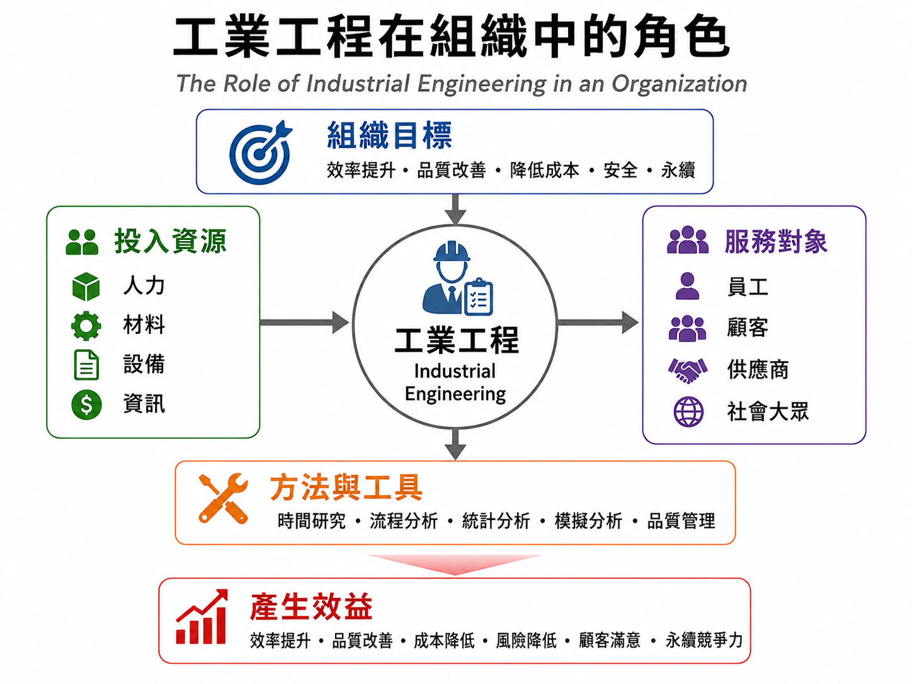
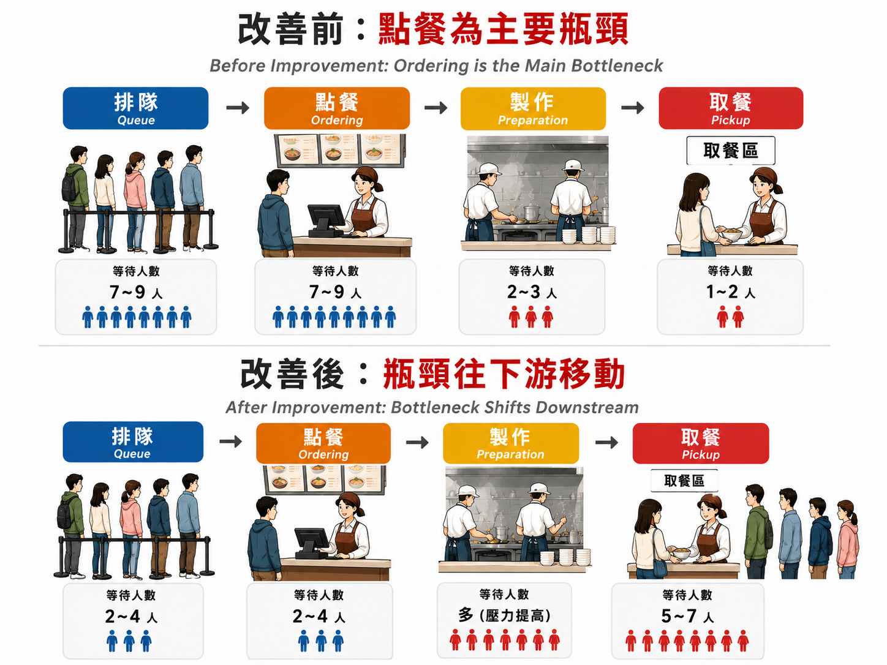
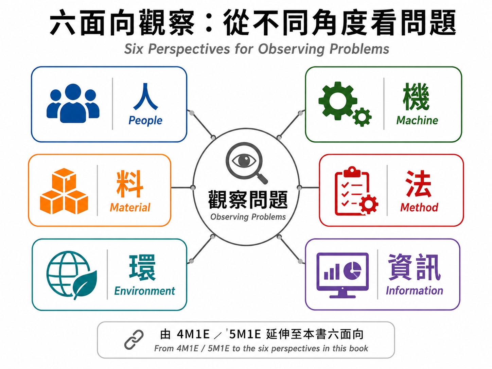
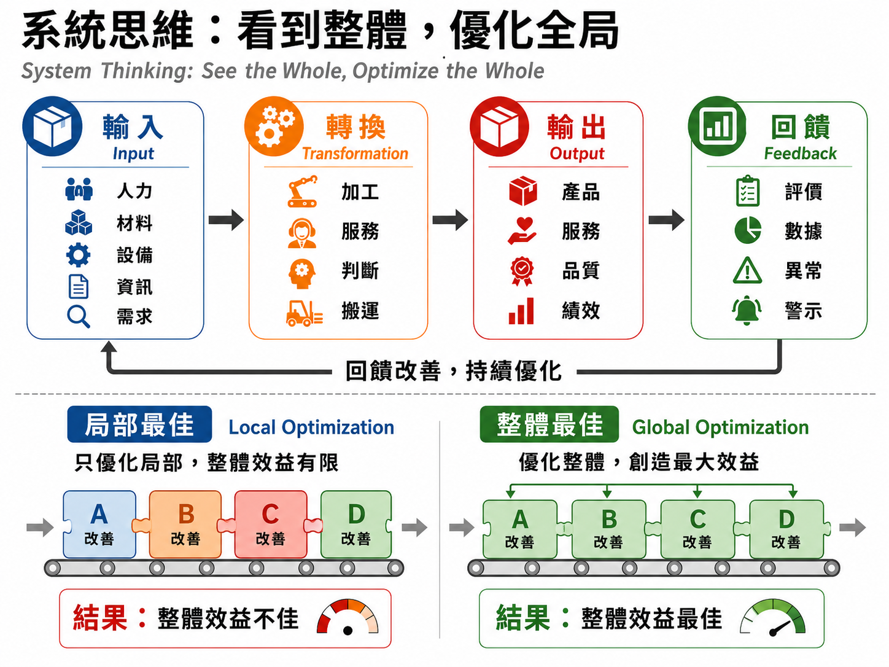
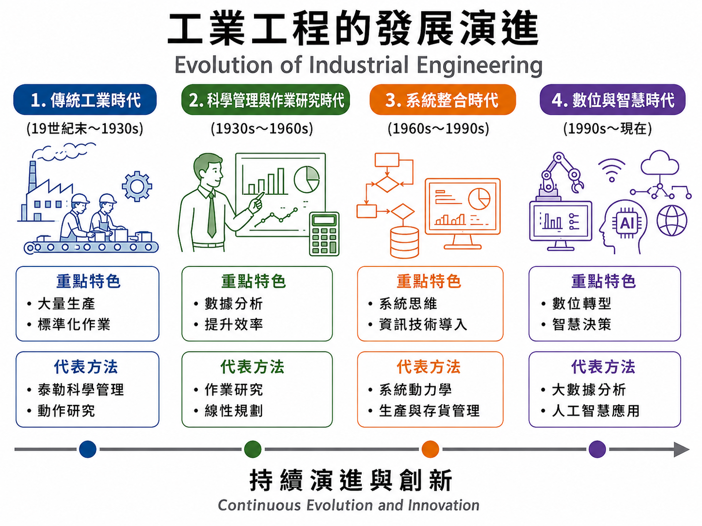
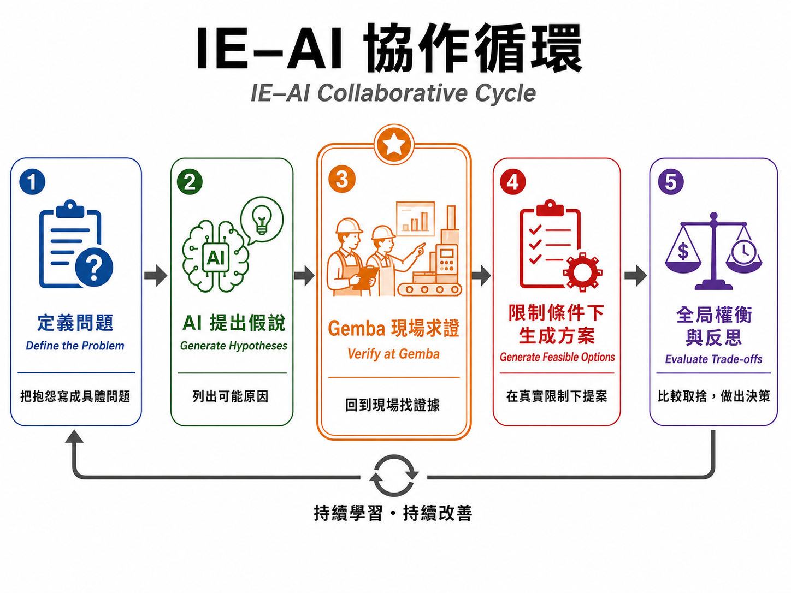

第1章 你每天都活在系統裡：第一次認識工業工程
第 1 章｜課程導讀
本檔為教師上課使用的「課程導讀版」內容，定位不是出版正文，也不是傳統 PPT。
建議作為 3 小時互動式教學網頁的主要內容來源，教師可依班級程度刪減，不必逐字講完。
本章定位
第一章的任務不是讓學生一次記住大量工業工程術語，而是先建立一套「看問題的方法」。
學生平常已經很熟悉排隊、等待、塞車、做不完、工作堆積、流程混亂等現象，也常會立刻提出改善方案：
人不夠，就加人。
排隊太久，就多開一個櫃台。
設備常停，就要求設備不要停。
庫存太高，就把庫存降下來。
工作做太慢，就要求作業者再快一點。
AI 可以回答問題，就直接問 AI 該怎麼改善。
這些方法不一定錯，真正的問題是：我們常在還沒看懂整個系統以前，就太早開始找答案。
本章要建立的核心觀念是：
工業工程不是只讓某一個工作點變快，而是在現實限制下，看懂整個系統，找到真正值得改善的地方。
本章學習目標
完成本章後，學生應能：
說明工業工程如何從單點效率問題轉向整體系統改善。
區分現象與可分析的問題，並初步界定系統邊界。
使用人、機、料、法、環與資訊六個面向觀察流程。
理解限制、瓶頸、局部最佳與整體最佳的基本概念。
以 AI 產生假說，並能走入現場（Gemba）蒐集證據進行驗證。
能在真實限制條件下比較不同方案，理解目標取捨並做出可辯護的決策。
課前準備
教師可準備：
第一章正式教材 Word / PDF。
本章教學圖片：
工業工程在組織中的角色
餐廳改善前／改善後：瓶頸轉移
六面向觀察
系統思維：看到整體，優化全局
工業工程的發展演進
IE–AI 協作循環
一個學生熟悉的排隊或等待案例。
可即時投票的互動題。
學生手機可使用的生成式 AI 工具。
課前先請學生回答：
「如果一家餐廳中午排隊太久，你第一個想到的改善方法是什麼？」
先保留答案，不急著公布「正解」。到 1.2、1.5 再回頭檢視學生最初的直覺。
三小時授課流程
時間 對應章節 教學內容 建議方式 學生產出 0:00–0:15 1.1 看到排隊，你會怎麼改善？ 即時投票、短討論 一個直覺改善方案 0:15–0:40 1.1 工業工程到底在解決什麼問題 圖像導讀、案例講解 一句 IE 定義 0:40–1:05 1.2 做得更快 vs. 整個系統更好 餐廳前後圖比較 找出瓶頸與副作用 1:05–1:30 1.3 六面向觀察 圖像導讀、小組掃描 六面向觀察清單 1:30–1:40 休息 1:40–2:00 1.4 系統與系統邊界 圖像講解、情境判斷 一個系統邊界 2:00–2:20 1.5 局部最佳 vs. 整體最佳 KPI 案例、角色辯論 一組整體 KPI 2:20–2:35 1.6 AI 時代為什麼還需要 IE AI 輸出分類 事實／假說／建議 2:35–2:55 1.7 第一次和 AI 一起做 IE 五階段任務 一份改善決策 2:55–3:00 1.8 本章整理 出門票 一句新的 IE 認識
1.1 工業工程到底在解決什麼問題？
教學核心
這一節要讓學生理解：
工業工程的起點不是「趕快想辦法」，而是先把現象轉成可以分析的問題。
學生通常很容易把「看到的地方」當成「問題發生的地方」。 例如餐廳點餐口排隊，就直覺認為點餐人力不足；行政窗口有人等待，就認為人太少。
教師要帶學生看見：
隊伍在哪裡，不代表根本原因一定在哪裡。
現象是「看見了什麼」。
問題定義則是「什麼結果，在什麼條件下，不符合期待」。
開場互動：這是現象還是問題？
依序呈現下列說法，請學生判斷：
情境 A
餐廳排隊很久。
情境 B
中午 12:00–12:20，學生從加入隊伍到拿到餐點平均需要 18 分鐘。
情境 C
行政效率很差。
情境 D
新生報到尖峰時段，學生在資料核對站平均等待 20 分鐘。
教師追問：
哪一句可以開始量測？
哪一句還只是感受？
哪一句已經包含時間、對象與流程？
如果今天要改善，你會先蒐集什麼資料？
圖像導讀：工業工程在組織中的角色

圖 1-1 工業工程在組織中的角色 建議顯示：
工業工程在組織中的角色 不要逐項念圖，而是用一句話帶：
工業工程站在「人、資源、方法、目標、服務對象」之間，協助組織把有限資源轉成更好的整體結果。
再請學生從圖中挑一個自己最熟悉的詞：
追問：
如果只改善其中一個，其他會不會變差？
這個問題先不要回答，留到 1.5。
教師導讀
可用一句話定義本課程的 IE：
工業工程是在現實限制下，設計、整合與改善系統，使整體運作得更好。 拆解四個關鍵詞：
現實限制
資源不可能無限增加。
系統
不同環節彼此連動。
整體
不能只看一個工作站或一個 KPI。
更好
不是只追求更快，而是在時間、成本、品質、安全、服務與工作負荷之間做合理取捨。
互動題
如果外送平台只設定「配送時間愈短愈好」，可能發生哪些副作用？
學生可能回答：
外送員搶快
交通風險
餐點確認不完整
錯送
客訴
工作壓力
教師收束：
「更快」可能是改善的一部分，但「更快」不等於「整體更好」。
AI 共學
請學生先自己寫：
「學校行政效率很差」至少還缺哪些資訊，才可以變成可分析的問題？
再請 AI 改寫。
最後比較：
AI 加了哪些具體條件？
哪些是 AI 自己假設的？
哪些資料仍需現場取得？
本節收束
現象告訴我們「好像哪裡不對」，問題定義則告訴我們「到底要改善什麼」。
1.2 從「做得更快」到「整個系統更好」
教學核心
本節要完成第一個重要認知轉換：
局部變快，不代表整個系統變快。 最適合使用餐廳改善前／改善後圖。
圖像導讀：改善前

圖 1-2 改善前後：點餐瓶頸與瓶頸往下游移動 先只顯示「改善前」區域，暫時不要讓學生看到改善後。
請學生觀察：
哪裡等待最多？
哪裡可能是目前瓶頸？
你第一個會改善哪裡？
你預測改善後會發生什麼？
教師不急著給答案。
瓶頸 Bottleneck
用水管比喻：
整條管線能通過多少水，不是看最寬的地方，而是看最窄的地方。
轉回流程：
整體流量不會因為某個非瓶頸工作站變快，就自動提高。
瓶頸可能是：
人力
機器
空間
規則
資訊確認
特定技能
核准權限
尖峰需求
在製品 WIP
製造現場常用：
Work in Process, WIP 表示尚未完成、正在流程中等待或加工的物品。
把概念延伸到服務：
等待中的訂單
尚未處理的申請
未完成的文件
排隊中的顧客
都可視為「流程中的工作」。
圖像導讀：改善後
再顯示改善後。
請學生比較：
點餐人力增加後，哪裡變好了？
哪裡變得更忙？
取餐等待為什麼增加？
問題是真的消失，還是被移動？
教師收束：
改善錯地方，壅塞可能只是搬家。 進一步思考：效率 vs. 效果
請學生判斷：
A
某工作站每小時從 60 件提升到 80 件。
B
整條產線每天交付量完全沒有增加。
問：
A 是不是代表改善成功？
帶出：
互動題
如果工廠每台設備利用率都接近 100%，這一定是管理很好的工廠嗎？
要求學生列出還想看的資料：
本節收束
真正重要的是系統能否穩定產出需要的結果，而不是每個工作站看起來都很忙。
1.3 工業工程師是怎麼看問題的？
教學核心
本節建立學生第一次進現場的觀察框架：
人、機、料、法、環、資訊 它不是背誦題，而是一套避免「只看到單一原因」的觀察鏡頭。
圖像導讀：六面向觀察

圖 1-3 六面向觀察：從不同角度看問題 顯示：
六面向觀察：從不同角度看問題 請學生看著圖回答：
如果便利商店尖峰排隊，你會從哪六個角度觀察？
六面向簡要導讀
人 People
機 Machine
料 Material
法 Method
環 Environment
資訊 Information
訂單
通知
優先順序
系統狀態
資料欄位
回饋訊號
名詞接軌：4M1E、5M1E
教師只做預告，不要求死背：
4M1E：Man、Machine、Material、Method、Environment
5M1E：品質管理情境常再加入 Measurement
本書把「資訊」獨立拉出，是為了更貼近：
現場觀察活動
請學生選一個校園流程：
用六面向列出至少一項觀察。
再加三種現象：
教師提醒：不要只找支持自己想法的證據
如果學生先認定：
店員太慢。
就很容易只注意店員停頓。
教師可問：
店員停下來，是人在偷懶，還是在等系統、等顧客、等餐點、等資訊？
帶出：
先觀察，後解釋。 本節收束
六面向的目的不是分類責任，而是提醒自己：還有哪一類因素，我沒有看？
1.4 什麼叫做「系統」？
教學核心
本節建立三個概念：
輸入—轉換—輸出—回饋
系統邊界
子系統之間的相互依賴
圖像導讀：系統思維

圖 1-4 系統思維：看到整體，優化全局 顯示：
系統思維：看到整體，優化全局 先只看上半部：
輸入 Input
轉換 Transformation
輸出 Output
回饋 Feedback
請學生各舉一個「學校上課」的例子。
可能答案
輸入
學生、教師、教材、教室、資訊
轉換
授課、討論、練習、回饋
輸出
學習成果、作品、能力、成績
回饋
作業、評量、學生反應、學習數據
系統邊界 System Boundary
教師提出：
「學生上課遲到」的系統邊界要畫在哪裡？
邊界 A
只看教室門口。
邊界 B
加入：
追問：
收束：
系統邊界不是自然存在，而是依問題與分析目的決定。
組織邊界 ≠ 流程邊界
以新生報到為例：
對行政單位來說是不同部門； 對學生來說卻是一段連續體驗。
教師追問：
每個部門都把自己的工作做好，學生體驗就一定好嗎？
留下到 1.5。
本節收束
系統不是元素的集合，而是元素之間的關係。
1.5 為什麼局部最佳不等於整體最佳？
教學核心
本節讓學生理解：
每個部門都做到自己的最好，整體不一定最好。
圖像導讀
使用「系統思維：看到整體，優化全局」下半部：
局部最佳 Local Optimization
整體最佳 Global Optimization
不要先解釋，先問：
左邊每一塊都努力改善，為什麼結果仍可能不好？
跨部門案例
採購
目標：最低單價 做法：一次大量採購
可能代價：
生產
目標：設備利用率最高 做法：機器不要停
可能代價：
業務
目標：接更多單 做法：接受急單、客製化
可能代價：
倉儲
目標：庫存最低 做法：限制進倉
可能代價：
KPI 活動
請學生扮演總經理：
採購部門如果只看「最低採購單價」，你會增加哪兩個 KPI？
可能包括：
庫存週轉
呆料率
缺料率
總持有成本
交期
現金占用
教師收束：
制度會引導行為。指標設計本身就是系統設計。 AI 角色辯論
請 AI 分別扮演：
討論：
公司應不應該一次買進一年份原料？
學生最後不能抄 AI 結論，而要回答：
本節收束
局部最佳化，不等於整體最佳化。
1.6 AI 時代，為什麼還需要工業工程？
教學核心
本節不是討論「AI 能不能取代人」，而是讓學生理解：
AI 很會給答案，但 IE 更重視「問題是否問對、證據是否可靠、方案是否真的可行」。
圖像導讀：工業工程的發展演進

圖 1-5 工業工程的發展演進 使用：
工業工程的發展演進 教師不需要逐年代細講，只抓一條主線：
大量生產與標準化
作業研究與數據分析
系統整合
數位、AI 與智慧決策
帶出：
AI 不是把 IE 取代掉，而是把 IE 可使用的工具再往前推一步。
AI 回答的三種性質
給學生一段 AI 回答：
「餐廳排隊可能因付款流程太慢，建議導入自助點餐機。」
請分類：
事實
AI 真正知道什麼？
假說
哪些只是合理推測？
建議
哪些是方案？
教師強調：
AI 說得很像真的，不代表已經有證據。
VERIFY 不是再問一次 AI
錯誤示範：
AI 說可能是付款慢。
再問 AI：「付款慢是不是合理？」
AI 說合理。
就當作已驗證。
教師問：
這有新的證據嗎？
真正的驗證可能需要：
現場觀察
服務時間
訂單資料
正式文件
系統紀錄
實驗或試行
互動題
AI 提出「餐廳排隊的十大原因」，這十項應該叫什麼？
正確觀念：
候選假說，而不是已確認原因。 本節收束
AI 可以協助回答問題，但工業工程首先要求我們問對問題。
1.7 第一次和 AI 一起做工業工程
教學核心
本節把前面的觀念整合成一個完整任務。
圖像導讀：IE–AI 協作循環

圖 1-6 IE–AI 協作循環的五個階段 顯示：
IE–AI 協作循環 五階段：
定義問題
AI 提出假說
Gemba 現場求證
限制條件下生成方案
全局權衡與反思
教師特別強調第 3 階段：
AI 的答案不是證據，必須回到現場。 任務：改善校園午餐排隊
第 1 階段｜定義問題
暫時不用 AI。
把：
「餐廳很慢。」
改成：
「週二 12:00–12:20，學生從加入隊伍到取得餐點的等待時間明顯偏高。」
再追問：
要改善總等待時間？
隊伍長度？
錯誤率？
顧客滿意？
第 2 階段｜AI 提出假說
請 AI 依六面向提出原因。
要求 AI 分類：
學生只挑 3–5 個值得查證的假說。
第 3 階段｜Gemba 現場求證
要蒐集什麼？
到達人數
點餐時間
製作時間
取餐等待
熱門品項
例外事件
學生要標記：
第 4 階段｜限制條件下生成方案
加入限制：
預算不超過 5,000 元
不能增加空間
不增加正式人力
一週內可試行
再讓 AI 生成方案。
這時的 AI 回答通常會比第一輪更接近現實。
第 5 階段｜全局權衡與反思
比較：
時間
成本
品質
工作負荷
可行性
是否把瓶頸移走
最後由學生決定：
哪個方案最值得先試？
並說明：
為什麼？
你來決定
提供：
方案 A
等待降低 20%，每月增加 12,000 元人力。
方案 B
等待降低 10%，只需調整排班。
方案 C
尖峰排隊改善最多，但取餐錯誤率可能提高。
學生先設定三個評估準則，再選方案。
本節收束
AI 提出假說，現場提供證據，人負責判斷。
1.8 本章整理：開始用 IE 的眼睛看世界
教學核心
最後不是再講一次所有名詞，而是讓學生把本章變成六個可以帶走的問題。
本章六個核心提問
我看到的是現象，還是已經定義清楚的問題？
這個問題的系統邊界應該畫在哪裡？
人、機、料、法、環與資訊之間如何互相影響？
真正限制整體表現的環節可能在哪裡？
改善一個地方，會不會讓其他地方變差？
AI 的回答有哪些是推測？我需要什麼資料或現場證據來查證？
關鍵詞快速回顧
工業工程 Industrial Engineering, IE
系統 System
流程 Process
系統邊界 System Boundary
瓶頸 Bottleneck
在製品 Work in Process, WIP
局部最佳 Local Optimum
整體最佳 Global / System Optimum
取捨 Trade-off
Gemba 現場
KPI
問題定義 Problem Definition
不要逐字背英文。 教師可以挑 4–5 個問學生：
你可以不用定義，而是用一個例子解釋嗎？
AI 挑戰題
請學生選一個日常流程問題：
先自己提出 3 個可能原因。
再請 AI 依六面向提出原因。
將 AI 內容分類為：
列出重要假說需要哪些外部證據才能驗證。
寫下：
哪些 AI 建議保留
哪些修改
哪些拒絕
理由是什麼
Mini Project｜從抱怨變成可改善的問題
2–4 人一組，選擇一個校園流程：
完整走過：
定義問題 → AI 提出假說 → Gemba 現場查證 → 限制條件下生成方案 → 全局權衡與反思 成果至少包含：
問題定義
系統邊界
現場觀察
AI 假說
查證結果
2–3 個方案
評估準則
最終決策與理由
學習歷程反思
請學生回答：
以前遇到問題時，我最常直接做什麼？
再回答：
學完這一章之後，我會多問哪兩個問題？
最後寫下一句：
我想帶到下一章的 IE 習慣是＿＿＿＿＿＿＿＿。 五分鐘出門票
今天以前，我認為工業工程是＿＿＿＿＿＿＿＿。
今天以後，我認為工業工程更重要的是＿＿＿＿＿＿＿＿。
如果明天看到一個排隊問題，我第一個會先確認＿＿＿＿＿＿＿＿。
AI 提出的原因，在查證以前應該先被視為＿＿＿＿＿＿＿＿。
教師收束語
可以用這段做本章最後一頁：
工業工程不要求我們看到問題後立刻有答案。
它先要求我們把問題看清楚：看流程、看限制、看彼此之間的關係，也看改善之後可能產生的新問題。
AI 可以幫我們想得更快、想得更多，但真正的工程判斷，仍然來自清楚的問題、可靠的證據，以及對整體結果負責的決策。
與下一章銜接
第一章先建立「IE 的眼睛」：
下一章將開始把這種觀察進一步轉成更具體的流程分析與改善方法。
教師課後紀錄區
本次學生最有反應的案例
-
最常出現的直覺改善方案
-
學生最容易混淆的概念
-
AI 活動中最常出現的問題
-
下次授課需要調整的時間
-
可以補強或刪除的內容
-
第1章 你每天都活在系統裡：第一次認識工業工程
第 1 章｜完整教材
第一篇 看懂工業工程與系統
本章學習目標
1. 說明工業工程如何從單點效率問題轉向整體系統改善。
2. 區分現象與可分析的問題，並初步界定系統邊界。
3. 使用人、機、料、法、環與資訊六個面向觀察流程。
4. 理解限制、瓶頸、局部最佳與整體最佳的基本概念。
5. 以 AI 產生假說，並能走入現場（Gemba）蒐集證據進行驗證。
6. 能在真實限制條件下比較不同方案，理解目標取捨並做出可辯護的決策。
1.1 工業工程到底在解決什麼問題？
中午十二點，下課鐘聲剛響，學生陸續走進校園餐廳。點餐櫃台前很快排起長隊，有人開始看手機，有人不耐煩地往前張望，也有人乾脆轉身離開。看到這樣的情況，最直覺的改善方式可能是：「再多開一個櫃台不就好了？」這個想法並不荒謬，甚至在許多現場都會成為第一個被提出的方案；問題在於，它把「隊伍出現在點餐櫃台前」直接等同於「點餐櫃台就是根本問題」，中間其實跳過了一段重要的分析。
假設餐廳真的把一個櫃台增加成兩個，點餐速度的確可能加快，排在櫃台前的人也可能迅速變少。然而，當更多訂單在短時間內同時進入廚房，新的壅塞可能立即出現在製作區；等餐的人逐漸集中到取餐口，工作人員一邊找餐、一邊回答顧客詢問，甚至因餐點完成順序與訂單順序不一致而增加核對時間。最後，原本清楚可見的「點餐排隊」消失了，顧客的總等待時間卻沒有下降，甚至變得更難預測。
這個例子說明了工業工程最重要的起點：不要只看一個工作點，而要觀察整套系統如何共同形成結果。若真正限制餐廳出餐能力的是廚房設備、備料方式或餐點組裝，那麼持續提高點餐速度，只會讓工作更快地湧向後端。換句話說，隊伍出現在哪裡，不代表問題一定發生在哪裡；我們看到的往往只是系統累積壓力後最終呈現的現象。
日常生活中，人們面對問題時常以最明顯的現象作為原因。看到塞車，就想到拓寬道路；看到工作做不完，就想到增加人力；看到產量不足，就要求作業者做快一點；看到顧客抱怨，就要求第一線人員加強服務。這些方法有時有效，但如果改善前沒有確認需求從哪裡來、流程如何連接、資源受到什麼限制，就可能只處理「看得到的地方」，而不是影響整體結果的真正因素。
因此，工業工程關心的問題通常不是「這個人能不能再快一點」，而是「這套工作方式能不能被設計得更好」。以餐廳為例，出餐時間過長可能來自備料不足、設備位置不佳、熱門品項沒有預製、點餐資訊不完整、付款流程干擾服務節奏、尖峰需求過度集中，或是前端接單速度已經超過廚房能力。當分析焦點從「誰不夠快」轉向「系統為什麼會形成這個結果」，我們才真正開始用工業工程的方式思考。
工業工程（Industrial Engineering, IE）雖然在歷史上與工廠、生產與工作研究密切相關，但今天的應用早已不限於製造現場。醫院掛號與候診、便利商店結帳、網購配送、銀行服務、機場旅客動線、大學選課、新生報到、校園停車、客服中心，甚至軟體服務中的使用流程，都涉及人員、設備、材料、資訊、方法、時間與空間之間的協調。只要有限資源必須透過一連串互相依賴的活動完成某個目標，就存在工業工程可以分析與改善的空間。
若要用一句話抓住本書對工業工程的基本定位，可以先記住：工業工程是在現實限制下，設計、整合與改善系統，使整體運作得更好。這句話中的每一個詞都很重要。「現實限制」提醒我們資源不可能無限增加；「系統」提醒我們不同環節互相影響；「整體」提醒我們不能只看單一指標；「更好」則要求我們先說清楚，到底什麼叫做好。
第 1 章教材圖片 1 圖 1-1 工業工程在組織中的角色
所謂「更好」，也不能只理解成「更快」。例如外送平台若只以縮短配送時間作為唯一目標，外送員可能被迫搶快，縮短確認餐點與地址的時間，甚至增加交通風險。平均配送時間可能下降，但若錯送、客訴與事故風險同步上升，就很難稱為真正改善。真實的工業工程問題通常同時涉及時間、成本、品質、安全、服務、資源使用與工作負荷，因此改善的本質常是不同目標之間的權衡，而不是某一個數字愈小或愈大就愈好。
在開始找方案以前，還有一件事情更重要：先把問題說清楚。生活中常聽見「餐廳排隊很久」、「行政效率很差」、「選課系統不好用」、「這個流程很亂」等說法。這些描述可能是真的，卻仍比較接近感受、現象或初步判斷。對工業工程而言，能被分析的問題通常還需要加入時間、範圍、對象、衡量方式與比較基準。
例如，「午餐排隊很久」可以改寫為：「中午十二點到十二點二十分之間，學生從加入隊伍到取得餐點的等待時間明顯高於其他時段。」若再進一步觀察，就能知道平均等待多久、哪一個步驟最常累積人數、不同餐點的處理時間是否不同，以及星期一和星期五是否有差異。當問題逐漸具體，我們才知道該量什麼、去哪裡量、改善後如何比較，以及哪些因素只是猜測。
這也是「現象」與「問題定義」的差別。現象告訴我們「好像哪裡不對」，問題定義則嘗試說清楚「什麼結果在什麼條件下不符合期待」。問題定義愈清楚，後續蒐集資料、找原因與評估方案就愈有方向；反過來說，如果一開始把問題定錯，後面即使使用再精密的公式、AI 或分析工具，也可能只是得到一個非常精確但沒有用的答案。
同樣的思考可以放到其他場景。便利商店結帳排隊，不一定只是收銀機太少，也可能是微波食品、繳費、取貨與多種付款方式同時占用店員時間；醫院候診過久，也不一定是醫師看診速度慢，還可能與報到、檢查、資訊傳遞、預約時段設計有關；網購隔日到貨也不是因為快遞員「騎得比較快」，而是下單、付款、揀貨、包裝、分撥與配送等多個環節能夠協調。
初學工業工程最容易犯的錯誤，就是太早提出解法。看到人排隊就想加人、看到庫存高就想砍庫存、看到設備停機就要求提高稼動率。專業分析的第一步恰好相反：暫時把解法放下，先確認現象、目標、範圍與證據。當你開始問「我們真正想改善的是什麼？」「這個問題如何被觀察或衡量？」「我看到的是原因還是結果？」時，就已經跨出了工業工程最重要的一步。
▸ AI 共學 請使用你熟悉的生成式 AI 工具，列出 10 個大學生一天生活中可能遇到的流程問題，例如上課、交通、餐飲、宿舍、圖書館、選課或行政服務。選其中 3 項，判斷它目前是「現象」還是已經可以分析的「問題」。
1.2 從「做得更快」到「整個系統更好」
在日常語言中，我們很容易把「更快」等同於「更有效率」，再把「更有效率」理解成「更好」。餐廳希望縮短點餐時間、工廠希望提高產量、醫院希望增加每小時看診人數，這些目標都合理。但只要系統中不同環節的處理能力不一致，單點速度提升就可能帶來新的等待、堆積與波動。
回到校園餐廳。假設櫃台原本每分鐘完成 3 筆點餐，增加人力後提升到每分鐘 6 筆；廚房每分鐘卻只能穩定完成 4 份餐點。前端看起來效率提高一倍，但每分鐘仍有約 2 筆訂單比廚房處理能力多。這些訂單不會消失，只會形成等待中的訂單、取餐人潮或工作壓力。從櫃台角度看改善成功，從顧客總等待時間與整體流動來看，卻可能只是把隊伍從前端搬到後端。
系統中限制整體表現的環節，常被稱為瓶頸（bottleneck）。在本章不需要立刻學會完整的瓶頸分析，只要先抓住直觀概念：整體流量不會因為某個非瓶頸環節變快，就自動超過真正限制系統的能力。如果水管中最窄的一段沒有改變，前端水壓再大，也不代表整條管線能通過更多水。
瓶頸不一定是一台慢機器。它可能是稀缺人力、空間、資訊確認、規則、核准權限、特定技能或需求尖峰。例如醫院檢查設備本身很快，但若只有少數技師能判讀結果，限制就可能在人而不在機；倉庫有很多揀貨員，但若所有人都必須等待一台包裝設備，瓶頸可能在設備；客服中心人力充足，但若某類案件一定要經主管人工核准，限制可能在規則與權限。
除了瓶頸之外，還有另一個必須注意的現象：工作在不同環節之間移動時，會形成等待中的顧客、訂單、文件或在製品。製造現場常用在製品（work in process, WIP）描述尚未完成、正在流程中等待或加工的物品。WIP 並不一定是壞事，但若前段持續大量生產、後段跟不上，WIP 會占用空間、資金與管理注意力，還可能遮蔽真正的品質問題。
例如一條產線要求前段加工站提升產出，作業者成功把每小時完成量從 60 件提高到 80 件，但後段檢驗仍只能處理 65 件。如果管理者只看前段設備利用率與產量，報表會顯示明顯進步；然而後段每天都多出尚未檢驗的產品，幾天後現場堆滿 WIP，找料、搬運與插單都更困難。局部指標變好，卻使整體交期、品質追溯與空間使用變差。
因此，工業工程中的「改善」不是單純追求某個工作站的最大速度，而是讓各環節之間的能力與需求更協調。這個概念也能解釋為什麼「設備不能停」不一定是好事。若市場暫時沒有需求，持續生產只會把原料變成庫存；若下一站已經塞住，讓上一站持續全速運轉，可能只是增加搬運與等待。真正重要的是系統是否穩定地產出顧客需要的結果，而不是每台設備看起來都很忙。
這裡開始出現工業工程的一個重要語言：績效不是單一數字。時間、成本、品質、安全、彈性、服務、資源利用與工作負荷可能彼此牽動。降低成本可能犧牲備援；增加庫存可以降低缺貨風險，卻占用資金與空間；追求最高設備利用率可能增加 WIP；提供高度客製化可以提升某些顧客滿意度，卻提高排程複雜度。
因此，好的改善方案通常不是「所有指標都同時最好」，而是在目標、限制與風險之間找到更合理的取捨（trade-off）。這也是工程判斷的重要來源：你必須說明自己優先保護什麼、願意付出什麼代價、哪些限制不可突破，以及改善後是否把風險轉移到其他地方。
這種思考也提醒我們，衡量績效時要小心「代理指標」。例如客服中心用平均通話時間代表效率，員工可能為了縮短時間而快速結束通話，造成顧客再次來電；倉庫用空間利用率愈高代表愈好，貨架塞得太滿後卻讓揀貨時間變長。指標本身沒有錯，問題在於它只代表系統的一部分。如果管理者把單一指標當成唯一目標，現場行為往往會被指標牽著走。
因此，從「做得更快」走向「整個系統更好」，其實是從局部效率走向系統績效。速度仍然重要，但必須放在流程、瓶頸、需求、品質與限制中解讀。這個轉變看似簡單，卻是後面工作研究、生產管理、品質、設施規劃、排程與供應鏈等方法共同的思考底座。
第 1 章教材圖片 2 圖 1-2 改善前後：點餐瓶頸與瓶頸往下游移動
在這裡也可以先區分「效率」與「效果」。效率常問的是「用多少資源完成多少工作」，效果則更接近「有沒有完成真正需要的結果」。一個部門可能非常有效率地完成大量工作，卻沒有解決顧客真正的需求；相反地，有些流程看起來保留了空檔或緩衝，卻能讓整體更準時、更穩定。工業工程後續會用不同指標描述這些差異，本章先建立一個基本原則：任何效率數字都必須和系統目標一起解讀。
改善還需要注意時間尺度。把今天的產量拉高，可能以明天的庫存與設備保養為代價；把本月採購成本壓低，可能增加下一季的呆料；用加班暫時消化訂單，也可能在數週後帶來疲勞、錯誤與離職。局部最佳不只發生在空間與部門之間，也可能發生在「現在」與「未來」之間。這就是為什麼工程判斷不能只看改善當下的一張報表。
1.3 工業工程師是怎麼看問題的？
當工業工程師面對一個問題時，第一件事通常不是立刻套公式，而是先把系統看清楚。要做到這件事，需要一套基本的觀察鏡頭，避免我們只注意最顯眼的表面現象。對初學者而言，本書先採用「人、機、料、法、環、資訊」六個面向，作為進入任何流程時的第一張觀察清單。
「人」包含作業者、顧客、使用者、主管與跨部門協作者。觀察人，不是要找誰做錯，而是了解技能、工作負荷、資訊理解、熟練度、溝通、疲勞與需求差異。「機」不只指工廠機器，也包括設備、工具、電腦、軟體、掃碼器與自動化系統。「料」可以是原料、零件、食材、文件或任何在流程中被處理、搬運與等待的實體對象。
「法」代表流程、規則、步驟、權限與工作方式。同樣一群人與設備，若流程設計不同，結果可能差很多。「環」包括空間、動線、光線、溫濕度、噪音、位置與時間條件；環境的影響常在辦公與服務流程中被忽略。「資訊」則包含訂單、標示、通知、系統狀態、資料欄位、優先順序與回饋訊號。數位化之後，很多實體流程的瓶頸其實來自資訊不完整、不同系統不同步或人員無法快速判讀。
以便利商店尖峰結帳為例，如果只看到隊伍，很容易認為「店員太少」。但從六個面向觀察，可能會發現：人員是否熟悉各種服務？收銀與微波設備是否共用同一位店員？熱門商品是否集中在某區造成動線交叉？取貨、繳費與一般購物是否使用相同流程？促銷資訊是否讓顧客到櫃台才開始詢問？系統畫面是否需要多次切換？一個排隊問題可以同時受到多個因素影響。
這六個面向的目的不是把責任分類，而是提醒分析者不要太早下結論。當你直覺認為「問題一定是人造成的」，框架迫使你再看設備、流程、環境與資訊；當你覺得「換一台更快的機器就好」，它也提醒你檢查材料供應、資訊輸入與下一站是否能跟上。
在傳統現場改善中，常見 4M1E：Man（人）、Machine（機）、Material（料）、Method（法）與 Environment（環）；在品質管理中，也常看到 5M1E，再加入 Measurement（測量）。不同產業與教材的分類可能略有差異。本書在入門階段另外把「資訊」拉出來，是因為服務流程、資訊系統與 AI 時代的大量問題，往往不是單純由實體人機料造成，而是資料與訊息如何流動所形成。
因此，現在先把這些分類當成觀察鏡頭，而不是考試口訣。未來進入品質管理、魚骨圖、作業分析或數位轉型時，你會再看到較正式的分類。重要的不是背得出幾個 M，而是能在面對問題時系統性地問：還有哪一類因素我沒有看？
第 1 章教材圖片 3 圖 1-3 六面向觀察：從不同角度看問題
除了六面向，工業工程師還會關心「時間」與「流動」。同樣五分鐘，有可能是實際加工五分鐘，也可能是工作一分鐘、等待四分鐘；同樣十個人，也可能是十個人都在工作，或七個人在等前一站。若只看總時間與總人數，很多浪費會被平均值遮住。因此現場觀察時，除了看有哪些資源，也要看它們何時工作、何時等待、如何移動，以及工作如何在站點之間交接。
另一個重要觀察是「變異」。真實世界很少每一筆訂單都一模一樣、每一位顧客都花同樣時間。有人只買一瓶水，有人同時取貨、繳費、微波與使用行動支付；有些零件加工很順，有些需要重工。平均值可以描述整體，但如果差異很大，尖峰與例外情況可能才是壅塞來源。這也是後面統計、品質與排隊觀念會重要的原因。
最後，觀察並不等於蒐集越多資料越好。好的觀察要和問題定義連結。若問題是午餐尖峰等待時間過長，最有價值的資料可能是到達人數、各站服務時間、等待人數與餐點類型，而不是把所有設備溫度、員工年資與每日營收全部記下來。工業工程的分析不是資料堆積，而是有目的地找到足以理解系統的證據。
▸ 名詞接軌｜4M1E、5M1E 與本書六面向
傳統 4M1E 常指 Man、Machine、Material、Method、Environment；品質管理常見的 5M1E 通常再加入 Measurement。為了貼近現代服務與數位流程，本書入門觀察另把「資訊」單獨拉出。這是教學上的現代化延伸，不把 Information 誤稱為傳統 5M1E 的固定成員。
▸ 動手做｜現場觀察
選擇校園中一個你每天經過的流程，站在現場觀察 10 分鐘。不要急著想改善方案，只記錄人、機、料、法、環、資訊，以及「等待、移動、重複確認」三類現象。最後圈出你原本完全沒有注意到的一項因素。
真正的現場觀察還要避免「只找支持自己想法的證據」。如果你一開始就認定是店員太慢，觀察時就容易只記住店員停頓的時刻，忽略其實有很多時間是在等系統回應或等顧客付款。較好的方式是先建立簡單紀錄表，把工作、等待、移動、重複處理與例外事件都記下，再回頭判斷哪一類現象最值得深入。這種先觀察、後解釋的紀律，是工業工程和直覺評論的重要差別。
同一個流程也可能因對象不同而需要不同觀察方式。對顧客而言，最重要的是從進入系統到完成服務的總時間；對作業者而言，可能更關心每個步驟的工作負荷與操作困難；對管理者而言，還會關心成本、產能與例外處理。好的分析不是選一個觀點取代其他觀點，而是理解不同角色看到的是同一系統的不同切面。
1.4 什麼叫做「系統」？
前面一直使用「系統」這個詞，但什麼才算一個系統？簡單來說，系統是由多個彼此關聯的要素所組成，這些要素為了某個目的共同運作。對工業工程而言，真正重要的不是單一要素存在什麼，而是要素之間如何連結，以及這些連結如何共同形成最後的結果。
理解系統最直觀的方法，可以先從「輸入—轉換—輸出—回饋」開始。以咖啡店為例，人力、咖啡豆、牛奶、設備、能源、顧客訂單與付款資訊都是輸入；研磨、萃取、調製、核對與交付是轉換過程；完成的飲品、顧客體驗、營收、廢棄物等是輸出。顧客評價、退貨、銷售資料、設備警示與等待時間又會成為回饋，影響下一輪備料、人力與流程安排。
第 1 章教材圖片 4 圖 1-4 系統思維：看到整體，優化全局
這個模型的價值在於讓我們不只看輸出。當顧客抱怨出餐慢時，我們可以回頭檢查：輸入是否在尖峰突然增加？轉換中的哪一步驟處理能力不足？輸出除了速度之外，品質與正確率如何？回饋訊號有沒有被管理者看見並轉成調整？同樣的架構也能用在醫院、倉庫、學校行政或線上服務。
但是，真正進行系統分析時，還有一個重要決定：系統邊界（system boundary）畫在哪裡。假設我們要研究「學生上課遲到」，如果邊界只畫在教室門口，可能只會記錄學生幾點進教室；如果把邊界擴大，就可能看到宿舍距離、公車班次、校園交通、電梯容量、前一堂課下課時間與課表安排。邊界不同，看到的原因與可採取的改善方式都不同。
系統邊界不是世界上自然存在的一條線，而是分析者依問題與目的定義出來的。邊界畫得太小，真正原因可能被排除；邊界畫得太大，又會讓分析失去焦點。工業工程師需要在「足以解釋問題」與「仍然可以分析與改善」之間找到合適範圍。
系統還有一個容易被忽略的特性：子系統彼此相依。餐廳中的點餐、製作、取餐可以看成三個子系統；大學中的招生、註冊、繳費、選課、住宿也可能分屬不同單位。行政組織圖上它們彼此分開，但對使用者而言，卻是一段連續體驗。只要前一個子系統的輸出成為下一個子系統的輸入，彼此就會互相影響。
因此，管理上的組織邊界不一定等於流程上的系統邊界。某個問題可能跨越多個部門，卻只有一個顧客結果。例如學生辦理新生報到時，可能同時經過教務、學務、總務、圖資與系所；若每個單位只優化自己的表單與窗口，學生仍可能在不同系統間重複輸入相同資料。從部門看每個單位都完成工作，從學生旅程看卻是一個破碎的流程。
回饋也是系統能否持續改善的關鍵。沒有回饋的流程，很難知道輸出是否符合需求；回饋太慢，也可能錯過調整時機。例如餐廳月底才知道顧客抱怨，而問題其實每天中午都發生；設備一個月後才統計故障，但現場早已累積大量異常。工業工程不只設計流程，也會關心回饋何時出現、誰能看見、如何轉成行動。
系統思維最後帶來一個重要提醒：問題常常不是某個元素「不好」，而是元素之間的配合方式不合適。兩台很好的設備放在錯誤位置、兩個能力很強的部門使用互相衝突的 KPI、兩套功能完整的資訊系統無法交換資料，都可能產生不好的系統結果。這也是為什麼工業工程強調整合，而不只是單點最佳化。
▸ AI 共學 請選擇「大學生選課」或「網購退貨」其中一個流程，讓 AI 分別以兩種不同系統邊界分析：第一種只看最直接的操作步驟；第二種把前後相關活動納入。比較兩份分析：邊界擴大後多看見了哪些原因？又增加了哪些不必要的複雜度？最後由你決定哪一個邊界最適合目前的問題。
1.5 為什麼局部最佳不等於整體最佳？
如果一個組織中的每個人、每個部門都努力把自己的績效做到最好，整個組織就一定會最好嗎？答案並不一定。這正是系統思維和一般單點管理最容易產生差異的地方。因為不同部門使用的指標、時間尺度與責任範圍不同，一個部門的「最好」有時正是另一個部門的負擔。
假設一家公司希望降低成本。採購部門為了取得較低單價，一次購買大量原料；生產部門為了提高設備稼動率，偏好長時間、大批量生產；業務部門為了提高接單與顧客滿意度，希望承接更多急單與客製品；倉儲部門則希望降低庫存，減少空間與資金占用。從各自部門的績效來看，每個選擇都有理由，但把它們放進同一個系統後，目標可能彼此衝突。
表 1-1 跨部門局部最佳與整體代價對照
部門 追求的局部最佳 常見做法 可能造成的整體代價 採購 最低採購單價 一次大量採購、追求數量折扣 庫存與資金占用增加，過期、呆料與需求變動風險上升。 生產 最高設備稼動率 設備不停機、偏好大批量生產 在製品堆積、排程彈性下降，可能生產目前不需要的品項。 業務 最大接單與顧客滿足 承接更多急單與客製品項 換線頻繁、插單增加，交期可靠度與生產穩定性下降。 倉儲 最低庫存與空間占用 嚴格限制進倉與安全庫存 缺料、停工或無法快速回應需求波動的風險提高。
大量採購確實可能降低單價，但同時增加庫存、現金流壓力與過期風險；設備長時間滿載，可能製造大量目前並不需要的產品；客製品愈多，換線與排程複雜度愈高；倉儲若把庫存壓得過低，又可能讓生產因缺料停工。問題不在某個部門「做錯」，而是每個部門的局部目標沒有被整合成一致的系統目標。
這種現象可以用局部最佳（local optimum）與整體最佳來理解。局部最佳表示某一個工作站、部門或指標在自己的範圍內表現最好；整體最佳則關心整個系統最終要達成的結果。真實管理中，整體最佳不一定代表所有局部都同時達到最大值，有時反而需要某個環節保留餘裕或接受較低利用率，才能使整體更穩定。
例如，一家醫院如果要求每位醫師把門診時段排到幾乎沒有空檔，看似最大化醫師利用率，但只要有幾位病人需要較長時間，後續預約就會持續延誤；保留少量緩衝反而可能提升整體準時率。又例如倉庫若追求每個儲位都塞滿，空間利用率很漂亮，卻可能讓揀貨路徑、補貨與盤點變得困難。局部指標不一定錯，但必須放回整體目的中解讀。
這也帶出 KPI（Key Performance Indicator，關鍵績效指標）的管理意義。指標會引導行為。若採購只被評估「平均採購單價」，最合理的行為就是大量採購；若客服只看「平均通話時間」，員工就會有壓力快速結束通話；若生產只看「設備稼動率」，現場自然傾向讓機器不要停。管理者設計指標時，必須思考它會誘發什麼行為，以及那些行為對其他部門與顧客結果造成什麼影響。
因此，系統思考要求我們在做任何改善決策時多問一個問題：這項改善對其他環節會造成什麼影響？這個問題很簡單，卻能避免大量「局部成功、整體失敗」的改善。例如把櫃台速度提高後，後端是否塞住？降低庫存後，缺料風險是否上升？減少人力後，服務品質或加班是否惡化？自動化某個步驟後，例外處理是否變得更困難？
整體最佳並不代表有一個永遠正確的答案。企業在不同時期可能有不同優先順序：現金流緊張時可能先降低庫存；新產品上市時可能更重視交期與彈性；高風險產業可能把安全放在速度之前。工業工程的價值不是替所有人決定優先順序，而是把不同方案的效果、限制與代價看得更清楚，讓決策可以被解釋與辯護。
▸ AI 共學｜角色辯論 請讓 AI 分別扮演採購、生產、業務與倉儲主管，對「公司應不應該一次買進一年份原料」提出立場。接著要求 AI 轉換成總經理角色，指出四個部門各自忽略了哪些系統代價。最後不要直接採用 AI 的結論，而是自行設計 2–3 個能兼顧單價、庫存、現金流與缺料風險的 KPI。
另外，整體最佳通常需要跨部門共同定義。如果高階目標只是「降低總成本」，不同部門仍可能各自解讀；若能進一步把顧客交期、庫存週轉、缺料率與品質一起納入，部門就比較容易理解自己的行為會如何影響整體。這也意味著系統改善不是單靠分析工具就能完成，還涉及溝通、共同目標與管理制度。後續章節談組織與控制時，會再回到這個問題。
因此，當你看到一個漂亮的部門績效報表時，可以練習問三件事：第一，這個指標和組織真正想達成的結果有什麼關係？第二，為了讓指標變好，現場可能採取哪些行為？第三，這些行為是否會把成本、等待或風險轉移給別人？只要開始習慣這三個問題，你就會發現「績效管理」本身也是一個系統設計問題。
1.6 AI 時代，為什麼還需要工業工程？
生成式 AI 已經可以快速整理資料、解釋概念、撰寫程式、提出改善方案，甚至協助排程與模擬。那麼，AI 時代還需要學工業工程嗎？答案可以從前面幾節得到：工業工程真正困難的部分，往往不只是「算出答案」，而是決定要解決什麼問題、系統邊界在哪裡、哪些限制不能忽略，以及最後應該採取什麼行動。
第 1 章教材圖片 5 圖 1-5 工業工程的發展演進：從傳統工業到數位與智慧時代
AI 很擅長根據已提供的資訊產生可能答案。當你輸入「餐廳中午排隊很久」，AI 可以迅速列出增加櫃台、預先點餐、調整菜單、分流付款、設置自助機等方案。這種能力非常有價值，因為它能快速擴大假說空間，提醒分析者想到原本沒想到的可能性。然而，AI 不知道今天現場到底是哪一個站點在塞、不同餐點服務時間差多少，也不知道學校真正允許的預算、人力與空間限制，除非你把可靠資料提供給它。
因此，AI 回答必須區分「事實」「推論」與「建議」。如果你告訴 AI 某餐廳只有一個櫃台，這是你提供的事實；AI 說「可能因付款流程太慢」，這是待驗證的推論；AI 建議「增加自助點餐機」，則是方案。把三者混在一起，是使用 AI 做分析時最危險的錯誤之一，因為語句流暢很容易讓人誤以為內容已經被證實。
AI 也可能在問題定義不清楚時給出非常完整卻無法落地的答案。例如「如何改善學校行政效率」範圍太大，AI 可以列出流程再造、資訊整合、自動化、KPI、教育訓練等十幾個方向，但這些內容難以直接行動。若把問題改成「新生註冊尖峰時段，學生完成身分確認到領取學生證平均需 45 分鐘，且其中 20 分鐘集中在資料重複核對」，AI 才有機會針對明確流程協助形成更有價值的假說。
此外，AI 不具備組織中的責任。它可以提出裁員、增加庫存、改變排班、提高自動化等建議，但真正承擔成本、員工影響、安全與顧客風險的是人與組織。這就是工程決策和單純生成答案的差別：決策者必須知道限制、證據強度與副作用，並對最後選擇負責。
所以，本書把 AI 放在一個更完整的學習循環中：ASK（提問）→ VERIFY（驗證）→ INTERPRET（解釋）→ DECIDE（決策）。提問不是把一句抱怨丟給 AI，而是建立可分析的問題；驗證不是問 AI 第二次，而是回到資料、來源、公式或現場；解釋是把結果放回系統情境；決策則是在人類設定的目標與限制下做選擇。
這個循環也能避免「AI 自己驗證 AI」的假象。如果 AI 提出某原因，接著又讓同一個 AI 回答「這個原因是否合理」，你得到的仍是語言模型的第二次推論，不是新的證據。真正的 VERIFY 應該加入外部資訊，例如現場觀察、量測資料、正式文件、實驗或不同來源。AI 可以幫你設計驗證方式，但不能自動把自己的猜測變成事實。
更重要的是，AI 的加入反而提高系統思考的重要性。當產生十個方案只需要幾秒鐘，人不再缺少「想法」，而更缺少判斷：哪些方案符合目標？哪些忽略關鍵限制？哪些只是把問題移到其他地方？需要哪些證據才能比較？如果答案生成的成本變得很低，問題定義、證據品質與決策邏輯就變得更珍貴。
因此，學工業工程並不是和 AI 競賽誰算得快，而是學會如何把 AI 放進可靠的分析流程。當你能清楚定義問題、理解系統、辨識瓶頸、設計指標、蒐集資料、驗證假說並做出取捨，AI 會成為能力放大器；如果這些能力不存在，AI 也可能只是把模糊的問題快速包裝成一個看似完整的答案。
AI 還有一個值得注意的限制：它通常看不到組織中沒有被文字化的知識。資深作業者可能知道某台設備在特定溫度下容易異常、某類訂單在週五下午特別容易延遲、某個表單欄位其實大家都用非正式方式補正。這些隱性知識如果沒有被蒐集，AI 再強也只能根據不完整的資訊推論。因此，訪談、走動觀察與現場紀錄並不會因 AI 出現而過時，反而成為補足模型盲點的重要方法。
另一方面，AI 也適合拿來做「反方檢查」。當團隊已經很喜歡某個方案時，可以要求 AI 列出這個方案最可能失敗的條件、可能被忽略的利害關係人，以及哪些指標會出現副作用。這不是把判斷交給 AI，而是利用它快速產生反例，降低團隊只尋找支持證據的偏誤。最後仍要回到現場與資料，判斷這些反例是否真的存在。
1.7 第一次和 AI 一起做工業工程
前面幾節已經建立問題定義、六面向觀察、系統邊界、瓶頸、局部最佳與 AI 驗證觀念。現在可以把它們整合成第一次簡單的 IE–AI 協作任務。這項任務不要求複雜計算，而是練習一個完整循環：先自己定義問題，再讓 AI 協助形成假說，回到現場求證，最後在真實限制下比較方案並做出判斷。
這個流程特別適合初學者，因為它把 AI 放在「中間」而不是「起點與終點」。起點是你對問題的觀察，終點也是你對證據與方案的判斷。AI 負責擴大思考、整理可能性與協助比較，而不是替你決定現場事實。
第 1 章教材圖片 6 圖 1-6 IE–AI 協作循環的五個階段
任務：改善校園午餐排隊
1. 定義問題（不用 AI） 選擇一個你熟悉的校園餐飲場景，把「很慢、很亂、排很久」改寫成包含時間、地點、流程或對象的具體問題。最好先界定一個可觀察時段，例如「週二 12:00–12:20」，並說明你要改善的是總等待時間、隊伍長度、正確率還是其他結果。先寫下自己的初步判斷，避免一開始就讓 AI 代替你決定問題。
2. AI 提出假說 讓 AI 依人、機、料、法、環、資訊六面向列出可能原因與潛在瓶頸。要求 AI 把每一項標示為「可觀察的現象」「可能原因」或「改善想法」，避免三者混在一起。從中挑選 3–5 個最值得查證的假說，並說明為什麼它們和目前問題最相關。
3. 現場觀察求證（Gemba） 回到真實場域蒐集證據，例如每分鐘到達人數、點餐時間、付款時間、等待人數、廚房完成速度、取餐等待、熱門餐點比例與例外情況。逐項標記 AI 哪些猜對、哪些猜錯、哪些重要因素完全漏掉。若資料不足，不要急著下結論，先把「不知道」保留下來。
4. 限制條件下生成方案 根據已確認的問題重新給 AI 任務，加入真實約束，例如「預算不超過 5,000 元」「不能增加人力」「不能改變廚房空間」「一週內必須能試行」。要求 AI 產生 2–3 個方案，並列出每個方案可能影響的時間、成本、品質、工作負荷與執行難度。限制條件愈具體，方案通常愈接近可行。
5. 全局權衡與反思 不要只問「哪個方案最快」。比較方案對不同指標的影響，預想是否會把瓶頸移到其他環節，並決定你願意接受哪些代價。最後保留一份思考歷程：你接受了哪些 AI 建議、拒絕了哪些、判斷依據是什麼，以及還有哪些不確定性需要後續驗證。
在實作時，你會發現「資料蒐集」本身也需要設計。若兩位同學對「開始等待」與「完成服務」的定義不同，記錄結果就無法直接比較；若只觀察五分鐘，可能剛好避開真正尖峰；若只看平均時間，又可能忽略少數等非常久的人。因此，Gemba 並不是去現場「看一看」，而是帶著明確問題與一致記錄方式取得證據。
方案比較也需要先定義評估準則。假設方案 A 可以把平均等待時間降低 20%，但需要額外人力；方案 B 只降低 10%，卻幾乎不增加成本；方案 C 能改善尖峰，但平常反而較麻煩。哪個最好，取決於你如何設定時間、成本、品質與可行性的優先順序。工程決策的價值正在於讓這些取捨被看見，而不是假裝存在一個沒有代價的完美答案。
最後，改善最好能以小規模試行來降低風險。若餐廳想改變取餐動線，可以先在一個中午試行並比較前後等待；若想改菜單，可以先針對尖峰熱門品項調整。小規模實驗不一定證明最終方案一定成功，但能讓原本的推測快速接受現場檢驗，也能避免一次投入太多成本。
▸ IE–AI 協作原則
AI 提出假說，現場提供證據，人負責判斷。五個階段的目的不是做出漂亮報告，而是保留一條可以追溯的思考路徑。
▸ 你來決定
假設方案 A 可降低 20% 等待時間但每月增加 12,000 元人力；方案 B 可降低 10% 等待時間且只需調整排班；方案 C 可以降低尖峰排隊但可能增加取餐錯誤。請先設定你認為最重要的 3 個評估準則，再決定選哪一個方案。不要只寫答案，要寫判斷依據。
當小規模試行顯示方案可能有效，下一步還不是立刻全面推行，而是把成功條件說清楚並建立可持續的做法。例如新的取餐動線若只有某位熟練員工在場時才有效，就還不能視為穩定改善；若改善後等待降低，卻讓備料人員長期加班，也要重新評估。真正成熟的改善需要能被重複、被交接、被監測，並在條件改變時重新檢查。這種「改善—驗證—標準化—再改善」的精神，會在後續章節反覆出現。 因此，改善不是一次性的答案，而是一套持續校正系統的能力。 也必須留下可追溯的證據與判斷依據。 才能真正持續改善。
1.8 本章整理：開始用 IE 的眼睛看世界
學完本章後，你應該已經開始用不同方式看待日常生活中的排隊、延誤、浪費與效率問題。工業工程的第一步不是急著找到工具，而是先看見系統：問題發生在哪個流程？哪些人、設備、材料、方法、環境與資訊彼此影響？真正限制整體結果的是什麼？某一個局部改善會不會把問題移到另一個地方？
這些問題看似沒有複雜公式，卻是後面所有工業工程方法的共同基礎。工作研究會讓你更精確地分析作業方法與時間；品質管理會讓你用資料理解變異與原因；生產與作業管理會進一步討論產能、庫存、排程與流程；設施規劃會處理空間與動線；作業研究則會用數學模型協助複雜決策。這些工具不同，但如果缺少系統邊界、問題定義與取捨概念，工具很容易被用在錯的地方。
所以，本章真正希望建立的不是一份名詞清單，而是一種思考習慣：先問問題，再找方法；先看整體，再看局部；先找證據，再下結論；先確認限制，再比較方案；即使使用 AI，也要知道哪些內容是事實、哪些只是推測，最後由自己做出可以說明的判斷。
你也可以把這種習慣帶到日常生活。下一次遇到排隊，不要只抱怨服務太慢，可以觀察人怎麼到達、每個站點做什麼、哪裡開始累積、哪些工作其實在等待；下一次看到某部門 KPI 很漂亮，可以問它是否真的改善顧客結果；下一次 AI 給你一串完整答案，可以先問：這些內容中，哪些是它知道的，哪些只是合理猜測？
從這一章開始，本書不期待你立刻像資深工程師一樣解決複雜問題，而是希望你逐步建立「IE 的眼睛」。當你能看見系統、區分現象與問題、注意瓶頸、理解局部與整體、願意到現場查證，後面的公式與工具才會真正有意義。
本章六個核心提問
1. 我看到的是現象，還是已經定義清楚的問題？
2. 這個問題的系統邊界應該畫在哪裡？
3. 人、機、料、法、環與資訊之間如何互相影響？
4. 真正限制整體表現的環節可能在哪裡？
5. 改善一個地方，會不會讓其他地方變差？
6. AI 的回答有哪些是推測？我需要什麼資料或現場證據來查證？
關鍵詞
工業工程（Industrial Engineering, IE）、系統（System）、流程（Process）、系統邊界（System Boundary）、限制條件（Constraint）、瓶頸（Bottleneck）、在製品（Work in Process, WIP）、局部最佳（Local Optimum）、整體最佳（System Optimum）、取捨（Trade-off）、Gemba（現場）、問題定義（Problem Definition）、關鍵績效指標（KPI）。
章末習題
1. 某餐廳增加一個點餐櫃台後，取餐等待時間反而變長。請用「局部改善」與「瓶頸」兩個概念解釋至少兩種可能原因。
2. 請選擇你一天生活中的一個流程，用文字描述它的輸入、轉換、輸出與回饋，並說明你會把系統邊界畫在哪裡。
3. 某公司為降低採購單價，一次購入一年份原料。請提出至少三項可能對整體系統造成的影響。進一步假設你是總經理：你會如何調整採購部門的 KPI，避免採購只追求最低單價，而忽略庫存、現金流、缺料風險與整體交期？
4. 「我們學校的行政效率很差」為什麼還不是一個足以分析的問題？請將它改寫成包含時間、對象、流程與衡量方式的問題敘述。
5. 請以人、機、料、法、環、資訊六個面向，分析一個你熟悉的排隊或等待場景。哪些因素是你目前已知的事實？哪些只是待查證假說？
6. 某客服中心要求平均通話時間降低 20%。請說明這項 KPI 可能造成哪些正面效果與副作用，並提出至少一個互補指標。
AI 挑戰題
選擇一個日常流程問題，先自己提出至少 3 個可能原因，再請 AI 依人、機、料、法、環、資訊六面向提出原因。比較兩份清單後，把 AI 內容標記為「事實／假說／建議」，再列出每一個重要假說需要什麼外部證據才能驗證。最後記錄你保留、修正或拒絕了哪些 AI 建議，以及理由。
Mini Project｜從抱怨變成可改善的問題
以 2–4 人為一組，選擇校園中一個常被抱怨的流程，例如電梯、餐飲、借還書、停車、教室設備或行政服務。完整走過「定義問題 → AI 提出假說 → Gemba 現場查證 → 限制條件下生成方案 → 全局權衡與反思」五個階段。成果不要求證明方案一定成功，而是要能說明你們如何從模糊抱怨逐步形成有證據、可辯護的改善判斷。
建議成果至少包含：問題定義與系統邊界、現場觀察記錄、AI 假說與查證結果、2–3 個方案、評估準則與限制條件、最終選擇與理由。若時間允許，可進行一次小規模試行，比較改善前後的等待、錯誤、工作負荷或其他指標。
學習歷程反思
請用 150–200 字回答：你原本遇到問題時最常採取哪一種直覺解法？學完本章後，你會多問哪兩個問題？在使用 AI 時，你認為自己最需要避免哪一種錯誤？最後只寫下一個你真正想帶到下一章的習慣，例如「先定義問題，再找工具」或「AI 的原因先當假說，不當事實」。
▌ 本章重點回顧
工業工程的核心不是讓單一工作站變得最快，而是在現實限制下改善整個系統。問題必須從模糊現象轉成可觀察、可衡量的敘述；分析要同時看人、機、料、法、環、資訊，並界定合適的系統邊界。瓶頸與 WIP 提醒我們局部加速可能把壅塞轉移；KPI 與局部最佳提醒我們每個部門都做得「最好」也不保證整體最好。AI 可以產生假說與方案，但現場證據、目標取捨與最終決策仍需要人負責。
第2章 流程分析、工作研究與生產力
第 2 章｜課程導讀
本檔為教師上課使用的「課程導讀版」內容，定位不是出版正文，也不是傳統 PPT。
本導讀依第二章完整教材內容濃縮整理，章節與核心知識點維持一一對應，建議作為 3 小時互動式教學網頁的主要內容來源。
教師可依班級程度調整講解深度，但學生即使只閱讀本導讀，也應能掌握本章的主要學習脈絡。
本章定位
第一章先建立一套「工業工程看問題的方法」：不要看到排隊就直接加人，不要看到設備停下來就只要求設備繼續運轉，也不要在還沒有證據以前，就把 AI 提出的原因當成答案。
第二章開始把這套思考方式轉成真正可以操作的方法。
學生平常很容易說：
這個流程很慢。
排隊的人很多。
店員動作太慢。
人手不夠。
這個步驟很麻煩。
應該做一個 APP。
用 AI 自動化就好了。
叫大家做快一點應該就能改善。
這些說法可能抓到部分現象，但真正的 IE 還要繼續問：
事情究竟是怎麼一步一步完成的？
中間有哪些工作？
哪些是在加工、確認、移動、等待或儲存？
為什麼這個步驟一定要存在？
完成工作到底需要多少時間？
改善之後，真的比較好嗎？
如果產量變多，但錯誤也增加，還算生產力提高嗎？
因此，本章要建立的核心觀念是：
看不清楚流程，就很難知道真正應該改善什麼。 本章會讓學生第一次完整經歷：
看流程 → 記錄流程 → 拆解活動 → 研究方法 → 衡量時間 → 判斷生產力 → 驗證改善 本章學習目標
完成本章後，學生應能：
區分工作（Task）、流程（Process）與系統（System）。
依分析目的界定流程的開始與結束。
理解服務流程中的前台（Frontstage）、後台（Backstage）與可見線（Line of Visibility）。
觀察人員流、物料流與資訊流。
辨認作業、檢查、搬運、等待與儲存五種基本活動。
說明工作研究（Work Study）、方法研究（Method Study）與工作衡量（Work Measurement）之間的關係。
使用 ECRS 思考工作方法，理解「先問能不能不做，再問怎麼做快」。
理解觀察時間（Observed Time）、平均時間與現場變異（Variation）的差異。
計算基本生產力（Productivity），並進一步判斷「有效產出」。
使用 AI 協助提出流程假說與改善方案，再回到 Gemba 現場查證。
能從時間、品質、成本、人員負荷與限制條件判斷改善是否真正有效。
課前準備
教師可準備：
第二章正式教材 Word / PDF。
本章教學圖片或網頁圖卡：
前台／可見線／後台
五種流程活動
工作研究架構
ECRS：E → C → R → S
行政流程改善前／改善後
投入 → 流程 → 有效產出／良品
一個學生熟悉的流程案例，例如：
校園餐廳
網購取貨
行政文件申請
便利商店咖啡
手機碼表。
可即時投票的互動工具。
學生手機可使用的生成式 AI。
課前先請學生回答：
「如果一個流程很慢，你第一個想到的改善方法是什麼？」
常見答案可能包括：
加人。
加機器。
做系統。
自動化。
用 AI。
要工作人員快一點。
先保留答案。
到 2.4 的 ECRS 時，再回頭檢查：
我們是不是還沒問『為什麼要做』，就已經直接跳到『怎麼做快』？ 三小時授課流程
時間 對應章節 教學內容 建議方式 學生產出 0:00–0:15 章首／2.1 一份午餐真的只有幾個步驟嗎？ 情境提問、即時投票 一條初始流程 0:15–0:40 2.1 工作、流程、系統／前台與後台／流程邊界 圖像導讀、角色比較 流程邊界＋前後台 0:40–1:05 2.2 五種流程活動 案例分類、小組討論 活動分類 1:05–1:30 2.3 工作研究 概念圖、迷思辯論 Work Study 架構 1:30–1:40 休息 1:40–2:05 2.4 ECRS 行政案例、AI 比較 ECRS 改善 2:05–2:30 2.5 工作衡量與變異 手機碼表、小實驗 時間資料 2:30–2:50 2.6 生產力與有效產出 計算、品質反例 生產力判斷 2:50–2:58 2.7 第一次完整改善 五階段整合 改善構想 2:58–3:00 本章整理 出門票 個人反思 一句新的流程觀
2.1 從一件工作，看見一條流程
教學核心
本節不是先教學生背流程圖符號，而是先建立：
我們平常看到的流程，可能只是真實流程的一部分。 學生要先理解三個層次：
工作 Task → 流程 Process → 系統 System 同時理解：
同一件事情，站在不同角色的位置，看到的流程可能完全不同。
從「買一份午餐」開始
每天中午到學校餐廳買飯，看起來是一件非常簡單的事情。學生可能只看到：
排隊 → 點餐 → 付款 → 等待 → 取餐
但當學生付款後站到取餐區，後方可能正在進行：
POS 系統傳送訂單。
廚房接收訂單。
確認餐點內容。
備料。
製作。
補充食材與包材。
核對餐點。
叫號與交付。
所以，「買一份午餐」看起來是一件事，實際上卻是一連串工作共同完成的結果。
在工業工程中，可以先用三個層次理解：
工作 Task
一項較具體的活動。
例如：
流程 Process
為了完成某個目的，由多項彼此相關的工作連接而成。
例如：
從接到訂單到把餐點交給顧客。
系統 System
更大的餐廳系統還包含：
採購
庫存
人力
設備
點餐
製作
支付
顧客需求
因此：
工作構成流程，流程存在於系統之中。 這個區分不是為了背名詞，而是提醒學生：分析問題時，要先確認現在看的到底是哪一層。
如果某位員工掃描商品特別慢，可能是一項工作問題；如果所有顧客都卡在結帳區，就要看整個流程；如果結帳變快後，後方包裝開始堆積，就必須回到更大的系統重新判斷。
流程邊界：從哪裡開始，到哪裡結束？
分析流程之前，必須先決定：
從哪裡開始？到哪裡結束？ 例如研究「午餐買太久」。
可以從：
學生開始排隊
算起。
也可以從：
學生下課離開教室
算起。
如果研究的是「取餐區為什麼很擠」，下課走路可能不重要；但如果研究的是「為什麼午休時間總是不夠」，從教室走到餐廳可能就要納入。
因此：
流程邊界必須和問題一致。 邊界太小，可能把真正原因排除在外；邊界太大，又可能把大量無關資訊帶進來。
前台、後台與可見線
服務流程有一個重要特色：
使用者看得到的，不一定是完整流程。 前台 Frontstage
顧客可以直接看到或接觸：
後台 Backstage
顧客通常看不到：
訂單傳送
備料
補料
訂單排序
餐點核對
異常處理
兩者之間可以想像存在一條：
可見線 Line of Visibility 這條線不是實體的牆，而是一個分析概念，用來提醒我們：
顧客看到的只是整個服務流程的一部分。
這也帶出本節非常重要的一句話：
顧客感受到問題的位置，不一定就是問題真正發生的位置。 例如學生在取餐區等了很久，不一定代表「取餐人員太慢」。
真正原因可能是：
訂單沒有送到廚房。
某項材料缺貨。
某種餐點需要比較長的製作時間。
餐點已做好，但叫號資訊沒有正確送出。
人、物料、資訊都在流動
流程中真正流動的不只有人。
人員流
人怎麼移動？
例如學生從點餐區移到取餐區。
物料流
東西怎麼移動？
例如食材從儲存區到工作台，再變成餐點送到取餐區。
資訊流
誰知道下一步該做什麼？
例如：
點餐內容 → 訂單系統 → 廚房 → 完成訊息 → 叫號
這三種流動不一定同步。
有時候人已經走到取餐區，但訂單資訊尚未送到廚房；有時餐點已經做好，但完成訊息沒有送出去。
表面上看起來都是「等餐」，真正的問題卻不一樣。
規定流程和實際流程
文件上可能寫：
填表 → 審核 → 核准 → 完成
但實際可能是：
填表 → 不知道怎麼填 → 詢問 → 補資料 → 送件 → 被退件 → 修改 → 再送 → 等簽核 → 完成
所以工業工程特別重視：
Gemba 現場 SOP 告訴我們：
理論上應該怎麼做。
現場則告訴我們：
事情實際怎麼做。 把看到的流程記錄下來
看到真實流程後，下一步不是急著畫複雜的專業圖，而是先把事情按順序記錄。
最基本可以先使用：
開始 → 活動 → 判斷 → 下一活動 → 結束
例如：
開始 → 學生填寫資料 → 資料完整嗎？ → 否：補件 → 是：承辦人審核 → 完成
其中「資料完整嗎？」就會形成不同分支。
流程圖最重要的目的不是畫得漂亮，而是把：
清楚呈現出來。
先把事情看對，再把事情畫好。 AI 共學
先自己畫一條流程，再問 AI：
「這是我從使用者角度看到的流程。可能還有哪些後台活動？」
把 AI 回答分成：
記住：
AI 可以幫我們想到「可能漏掉什麼」，但不能替代現場。
本節收束
流程分析的第一步，不是畫漂亮的圖，而是確認事情實際怎麼發生。
2.2 把流程拆開：作業、檢查、搬運、等待與儲存
教學核心
當我們已經知道一件事情的實際流程後，下一步就可以問：
流程裡的每一分鐘，究竟在做什麼？ 例如網路購物：
訂單成立 → 等待揀貨 → 找到商品 → 搬到包裝區 → 核對商品 → 包裝 → 暫存在出貨區 → 等待物流車 → 出貨
這些活動雖然屬於同一條流程，性質卻不同。
五種基本流程活動
作業 Operation
產品、資料或服務正在發生改變。
例如：
零件鑽孔。
餐點烹調。
文件內容修改。
商品包裝。
這是最容易讓人覺得「真的有在工作」的一類活動。
檢查 Inspection
確認結果是否正確或符合要求。
例如：
商品尺寸是否正確。
零件是否符合規格。
文件是否完整。
餐點是否做對。
檢查通常不直接改變產品，但可能避免錯誤流到下一站。
搬運 Transportation
人、物品、文件或資料由一個位置移到另一個位置。
例如：
零件送到下一站。
商品搬到包裝區。
文件送主管。
工作人員走去拿工具。
等待 Delay
事情本來應該繼續，但暫時停住。
例如：
顧客排隊。
半成品等機器。
文件等簽名。
訂單等材料。
儲存 Storage
有計畫地保留，等待未來使用。
例如：
等待和儲存有什麼不同？
兩者表面上都可能呈現「沒有動」。
但：
等待通常是希望趕快進到下一步。
儲存則是有意識地先保留。
例如：
半成品卡在機器前：
Delay。
原料依計畫放在倉庫等待下週使用：
Storage。
分類不等於價值判斷
不能直接說：
等待一定不好。
也不能說：
檢查一定沒有價值。
例如藥品、食品、航空安全等情境，檢查可能非常必要。
因此第二章先做的是：
把活動看清楚。 第3章才會正式討論：
哪些活動可能構成浪費？
流程時間不等於加工時間
假設一杯飲料真正製作只要：
2 分鐘
但顧客從開始排隊到拿到飲料共花：
15 分鐘
那另外 13 分鐘去哪裡？
可能是：
所以：
加工時間不等於整體流程時間。 改善如果只把 2 分鐘的製作縮短一點點，顧客的 15 分鐘總時間可能幾乎沒有感覺。
活動有時不一定只有一種性質
真實工作有時具有複合性。
例如倉庫人員拿起商品時，同時順便確認標籤。
這個步驟可能同時包含：
實際分析時，可依研究目的決定主要分類。
所以流程分析並不是要追求：
每個活動都只有唯一標準答案。
而是要能說明：
為什麼這樣判斷？ 動手做
選擇一個日常流程：
記錄 5～10 個步驟，再分類。
如果同學分類不同：
不急著問誰對，先問「你的理由是什麼？」
本節收束
先描述活動，再判斷問題。
2.3 工作研究：不是叫人做快一點
教學核心
很多學生第一次聽到「工作研究」，會想到：
工業工程師拿碼表站在員工旁邊，看誰做得慢。
這其實把工作研究看得太窄。
工作研究 Work Study 主要包含兩個部分：
方法研究 Method Study
這件工作怎麼做比較合理？
工作衡量 Work Measurement
在合理方法下，需要多少時間？
兩者的先後關係非常重要。
先改方法，再量時間
假設包裝員的工作是：
拿紙箱 → 走回工作台 → 拿膠帶 → 走回工作台 → 包裝 → 搬成品
平均每件：
120 秒。
如果直接要求：
以後 110 秒完成。
問題可能完全沒有被處理。
更合理的問題是：
為什麼紙箱那麼遠？
膠帶為什麼不在手邊？
成品為什麼要搬這麼遠？
如果工作方法不合理，就應該先改善方法。
因此：
方法研究原則上先於工作衡量。 而且，方法一旦改變，原本的時間資料往往也不能直接沿用。
如果工作台重新配置、動作順序改變，原本的 120 秒已經不再代表新方法。
工作研究不只追求快
更合理的工作可能意味：
少走路。
少找東西。
少出錯。
更安全。
更容易學習。
不容易疲勞。
所以：
「更合理」通常比單純「更快」更重要。 Taylor 與 Gilbreth
本章不需要把歷史人物背成考試題。
只要掌握一個脈絡：
早期工業工程開始嘗試把：
變成可以系統研究的對象。
真正值得留下來的問題是：
現在的做法，是因為合理，還是只因為以前一直都這樣做？ 工作衡量也不是只為了管員工
組織需要時間資料，可能是為了：
安排人力。
規劃產量。
估算成本。
比較改善前後。
安排排程。
所以工作衡量本身是管理工具。
問題在於：
數字怎麼被解讀與使用。
如果主管拿「最快一次」要求每個人長期維持，就可能把工程工具變成不合理壓力。
AI 時代仍然需要工作研究
例如：
每天把 A 系統資料複製到 B 系統。
第一個直覺可能是：
寫程式自動搬。
但 IE 還要問：
為什麼 A 和 B 都需要同一份資料？
如果其中一份根本沒有存在必要，最好的改善不是：
搬快一點。
而是：
不要搬。 這正是下一節 ECRS 要處理的問題。
本節收束
工作研究不是把不合理的工作做得更快。
2.4 方法研究：這件工作一定要這樣做嗎？
教學核心
假設一份校園行政流程是：
學生填資料 → 列印 → 簽名 → 承辦人重新輸入 → 列印 → 主管簽名 → 回承辦人 → 再輸入另一系統 → 完成
如果問：
怎麼改善？
最常見的答案可能是：
這些都可能有用。
但方法研究不應該從這裡開始。
ECRS：先問工作為什麼存在
本課程採用一個重要的改善思考優先順序：
Eliminate → Combine → Rearrange → Simplify 也就是：
消除 → 合併 → 重排 → 簡化 Eliminate 消除
第一個先問：
這一步能不能根本不要做？ 例如：
為什麼同一份資料要輸入三次？
為什麼一定要列印？
為什麼需要三個人重複確認？
如果活動沒有必要存在，最好的改善通常不是把它做快，而是取消。
Combine 合併
如果不能取消，再問：
能不能和別的活動合在一起完成？
例如：
兩次身分確認是否可以一次完成？
兩張重複表格是否可以整合？
Rearrange 重排
如果仍然需要存在：
能不能改變順序、位置或負責人？
例如：
常用工具移到手邊。
先確認資料再列印。
調整交接順序。
Simplify 簡化
確定工作真正需要存在之後，才進一步思考：
怎麼做得更容易、更快、更穩定？
這時才開始談：
最重要的一句話
不要把一件根本不需要做的事情，自動化得更有效率。 這是 ECRS 對初學者最重要的提醒。
AI 特別容易直接跳到：
Simplify。
所以工業工程要先把問題往前拉：
為什麼要做？ Eliminate 也不能亂刪
例如主管簽核可能涉及：
因此不是看到麻煩就取消。
而是：
先確認活動的功能，再決定能不能消除。 AI 共學
第一輪問 AI：
「請改善這個行政流程。」
第二輪改成：
「請依 Eliminate → Combine → Rearrange → Simplify 的優先順序分析，第一步先不要提出科技工具。」
比較：
哪一輪比較快出現 APP、AI、自動化？
哪一輪比較常問「為什麼」？
哪些 AI 建議還需要查證？
哪些活動其實可能不能取消？
本節收束
先問能不能不做，再問怎麼做快。
2.5 工作衡量：完成一件工作到底需要多久？
教學核心
方法研究處理：
怎麼做比較合理？
接下來開始問：
這樣做到底需要多少時間？ 假設同一項簡單工作連續做五次：
48 秒 52 秒 50 秒 51 秒 49 秒
平均為：
50 秒。
是不是可以直接規定：
所有人以後都必須 50 秒內完成？
答案是：
還不能。
Observed Time
現在真正得到的是：
觀察時間 Observed Time 只能說：
在這幾次觀察條件下，平均約 50 秒。
不能直接說：
標準時間就是 50 秒。
為什麼每次時間不同？
因為現場存在：
Variation 變異 可能來自：
工作本身的自然差異
例如每個紙箱尺寸略有不同。
隨機干擾
例如：
人員差異
例如：
疲勞與生理變化
例如：
上午 9 點與下午 4 點的工作狀態可能不同。
異常事件
例如：
為什麼不能只量一次？
如果第一次剛好 48 秒：
不代表每次都是 48 秒。
如果第一次剛好遇到異常，量到 70 秒：
也不代表正常工作需要 70 秒。
所以需要多次觀察。
平均也不是完整答案
即使平均 50 秒，也還要問：
工作條件是否正常？
是否只量了很短時間？
工作是否會疲勞？
是否需要必要休息？
是否有不可避免延誤？
所以：
平均觀察時間 ≠ 完整標準工時 異常值能不能排除？
假設八次紀錄：
49、51、50、48、78、50、52、49 秒。
第五次 78 秒，是因為膠帶用完。
如果研究：
正常操作時一件需要多久？
可能會另外討論這次異常。
但是如果研究：
真實工作一小時到底可以完成多少件？
而膠帶平均每 20 分鐘就會用完一次，那麼換膠帶可能根本不是「可以忽略的異常」，而是工作的一部分。
所以：
資料是否排除，要看分析目的。 最快的一次更不能直接當標準
某次最快：
42 秒。
可能只是：
剛好很順。
沒有干擾。
短時間加速。
甚至省略某些檢查。
人可以短時間衝刺。
不代表：
可以長時間一直維持 42 秒。
AI 共學
把幾次時間交給 AI：
「請幫我設定標準時間。」
再追問：
AI 還不知道哪些現場條件？
可能包括：
疲勞
工作難度
不同工作者
是否有異常
工作持續時間
品質要求
必要休息
本節收束
測到的時間是證據，但不是命令。
2.6 生產力：做得更多，就代表做得更好嗎？
教學核心
生產力最基本的公式很簡單：
\[ 生產力= rac{產出}{投入} \]
例如：
兩人工作一小時。
改善前：
40 件。
所以：
\[ 40÷2=20件／人時 \]
改善後：
50 件。
所以：
\[ 50÷2=25件／人時 \]
看起來：
生產力提高 25%。
但是不要太快下結論。
如果 50 件裡面有 10 件壞掉？
改善前：
40 件全部良品。
改善後：
50 件，其中 10 件不良。
真正可以交出去的仍然只有：
40 件。
如果用良品計算：
\[ 40÷2=20件／人時 \]
所以：
有效良品生產力根本沒有增加。 而且還多了：
Output 到底是什麼？
這才是生產力真正困難的地方。
例如客服中心：
每小時處理：
20 通電話。
但是：
15 個人隔天又打回來。
那真正的 Output 是：
通話數？
問題解決數？
顧客滿意？
不再重複來電？
所以：
公式很簡單，但「產出怎麼定義」並不簡單。 Input 也不只有人力
本章最簡單的例子常使用：
人時。
但實際上投入可能還包括：
例如購買昂貴設備後，人工生產力可能提高很多，但如果設備成本、維修費與能源使用都大幅增加，整體是否值得仍需另外判斷。
所以：
單一要素生產力變好，不代表整個系統成本一定更好。 Efficiency、Effectiveness、Productivity
可以簡單理解：
Efficiency 效率
資源使用得好不好？
Effectiveness 效果
真正的目標有沒有達成？
Productivity 生產力
投入和產出的關係如何？
例如：
一個團隊非常快速地做出 100 份根本沒有人需要的報表。
可能：
執行得很有效率。
但：
並沒有真正達成有價值的目標。
忙碌不等於生產力
例如為了讓每個員工不要閒著，拼命多做半成品。
每個人看起來都很忙。
但如果下一站根本處理不完：
半成品堆積。
空間變少。
庫存增加。
完成品沒有增加。
所以：
人員忙碌不等於整體生產力提高。 AI Scenario
給 AI：
「產量提高 25%，但不良率增加到 20%，是否成功？」
不要直接抄答案。
學生要問：
AI 使用哪些評估準則？
有沒有忽略疲勞？
有沒有忽略成本？
安全呢？
顧客呢？
你的判斷是否和 AI 一樣？
本節收束
產出增加，不代表有效產出增加。
2.7 第一次完整做一次流程改善
教學核心
到這裡，我們已經有：
流程
五種活動
工作研究
ECRS
時間資料
生產力
現在要把這些方法組合在一起。
本章不另外發明新的改善步驟。
直接延續第一章的五階段思考：
界定 → AI 假說 → Gemba → ECRS → 全局權衡 只是第二章開始加入：
第 1 階段｜界定時空邊界
先不用 AI。
不要只寫：
「影印很慢。」
可以改成：
「週三中午 12:00–12:20，從學生交出檔案到取得完成文件的總時間偏長。」
要寫清楚：
哪裡？
什麼時間？
從哪裡開始？
到哪裡結束？
想改善什麼？
第 2 階段｜AI 提出假說
學生先自己想。
再問 AI：
還可能漏掉哪些流程？
後台可能發生什麼？
有哪些可能原因？
全部先標成：
假說 Hypothesis 不是答案。
第 3 階段｜Gemba 現場查證
實際記錄：
然後把 AI 的說法標記：
這一步的目的不是蒐集越多資料越好，而是：
用現場證據回答前面的假說。 第 4 階段｜ECRS
依：
E → C → R → S 重新思考。
不能一開始就：
做 APP。
每一項改善都回答：
要改什麼？
為什麼？
有什麼限制？
哪些活動不能刪？
第 5 階段｜全局權衡
比較改善前後：
時間
有效產出
品質
成本
人員負荷
安全
顧客感受
最後才問：
這個方案真的值得採用嗎？ 改善不能只因為：
秒數變短。
就直接宣布成功。
AI 挑戰
把你的改善方案交給 AI：
「請從品質、安全、工作負荷、成本與問題轉移五個角度，挑戰我的改善方案，不要直接替我做決定。」
最後由學生自己判斷：
本節收束
改善不是提出一個方案，而是能用證據說明：為什麼它比較好，以及代價是什麼。
本章整理：把「感覺」轉成「工程判斷」
第二章真正希望學生帶走的，不是流程符號與公式，而是一連串新的判斷習慣。
看到流程很慢時，不再直接說：
「加人。」
而是先問：
真正的流程是什麼？
看到一項工作很麻煩，不再立即說：
「用 AI。」
而是先問：
這件工作真的需要存在嗎？
看到平均 50 秒，不再直接說：
「標準就是 50 秒。」
而會問：
現場有哪些變異？
看到產量提高，不再立即說：
「改善成功。」
而會問：
良品呢？成本呢？人員負荷呢？
這正是從直覺判斷逐漸轉向工程判斷的開始。
本章八個核心提問
真正的流程是什麼？
流程邊界畫在哪裡？
前台看到的，和後台實際發生的一樣嗎？
每個活動屬於什麼性質？
這一步真的需要存在嗎？
測到的時間代表什麼？又不代表什麼？
有效產出真的增加嗎？
AI 的建議經過現場查證了嗎？
關鍵詞快速回顧
工作 Task
流程 Process
系統 System
前台 Frontstage
後台 Backstage
可見線 Line of Visibility
作業 Operation
檢查 Inspection
搬運 Transportation
等待 Delay
儲存 Storage
工作研究 Work Study
方法研究 Method Study
工作衡量 Work Measurement
Eliminate
Combine
Rearrange
Simplify
ECRS
觀察時間 Observed Time
變異 Variation
生產力 Productivity
產出 Output
投入 Input
效率 Efficiency
效果 Effectiveness
現場 Gemba
教師不需要逐字考英文。
可以隨機挑幾個問：
「你能不能不用定義，而是用生活例子解釋？」
AI 挑戰題
請學生選一個自己熟悉的小流程。
完成：
不用 AI，先畫流程。
定義開始與結束。
標示前台與可能後台。
自己先分類主要活動。
請 AI 找可能遺漏的活動與原因。
回到現場查證。
使用 ECRS 提出改善。
用時間、品質或有效產出判斷改善。
寫下：
AI 哪裡說對
哪裡說錯
哪裡沒有證據
最終採用什麼方案
Mini Project｜改善我身邊的一個小流程
2–4 人一組，選擇一項低風險、可實際觀察、不涉及敏感個資的流程，例如：
完整完成：
界定 → AI 假說 → Gemba → ECRS → 全局權衡 成果至少包含：
問題定義
流程邊界
改善前流程
前台／後台
活動分類
自己的第一判斷
AI 假說
現場證據
簡單時間資料
AI 查證結果
ECRS
改善方案
改善前後比較
最終決策與理由
學習歷程反思
請完成：
我以前看到流程慢，第一個想到的是＿＿＿＿＿＿。
現在我會先＿＿＿＿＿＿。
我最容易跳過 ECRS 中的＿＿＿＿＿＿。
我現在知道平均時間還不能直接當成＿＿＿＿＿＿。
我現在知道產量增加後還要確認＿＿＿＿＿＿。
AI 提出的原因，在驗證之前只能算＿＿＿＿＿＿。
最後寫：
我想帶到下一章的 IE 習慣是＿＿＿＿＿＿＿＿。 五分鐘出門票
流程分析的第一步是＿＿＿＿＿＿。
ECRS 中應優先思考＿＿＿＿＿＿。
Observed Time 不等於＿＿＿＿＿＿。
生產力的 Output 應該盡量代表＿＿＿＿＿＿。
AI 可以提供＿＿＿＿＿＿，但真正的原因仍需要＿＿＿＿＿＿。
教師收束語
可以用這段作為本章最後一頁：
工業工程不是看到一個人很忙，就要求他再快一點；也不是看到流程麻煩，就立刻導入設備或 AI。
真正的改善，先從把流程看清楚開始：事情實際怎麼做、時間花在哪裡、哪些活動為什麼存在，以及改變之後究竟產生什麼結果。
當我們開始用現場、時間與有效產出取代直覺，就從「覺得哪裡有問題」，慢慢走向「有證據地知道應該改善哪裡」。
與下一章銜接
第二章讓我們開始學會：
看流程
記錄流程
拆活動
研究方法
量時間
看生產力
驗證改善
下一章會進一步問：
流程裡的哪些活動真正創造價值？哪些活動可能只是浪費？ 也將正式進入：
精實思維、浪費與持續改善。
教師課後紀錄區
本次學生最有反應的案例
-
學生最常直接跳到的改善方式
-
ECRS 中學生最容易忽略的步驟
-
學生最容易混淆的流程活動
-
工作衡量中最常見的變異
-
AI 活動中最常出現的問題
-
本次授課時間不足的地方
-
下次可以補強的內容
-
可以刪減的內容
-
第2章 事情是怎麼一步一步完成的？從流程看見問題
第 2 章｜完整教材
第二篇前導暫不另立
你到學校餐廳買一份午餐。
先排隊、點餐、付款，接著等待餐點製作，最後取餐離開。從學生的角度來看，這只是一件每天都會發生的小事；但如果站在工業工程的角度來看，這其實是一個由許多工作步驟、不同人員、設備、資訊與等待時間所組成的「流程」。
有時候，排隊的人很多，但廚房其實並不忙；有時候，點餐櫃檯沒有排隊，取餐區卻擠滿了人；也可能明明增加了一位服務人員，整體等待時間卻沒有明顯縮短。
這些現象告訴我們：
看到「很忙」，不一定代表知道問題在哪裡。
第一章談的是「系統」——工業工程不是只改善一個人、一台機器或一個工作站，而是希望整個系統運作得更好。
但要改善系統，下一個問題就是：
系統到底是怎麼運作的？
我們必須先知道事情從哪裡開始、經過哪些步驟、由誰處理、在哪裡等待，又在什麼地方完成。換句話說，我們必須把原本模糊的「事情很多」、「速度很慢」、「好像塞住了」，轉換成一個可以被觀察與描述的流程。
這正是本章要建立的第一項重要能力：
把事情的發生過程看清楚。
本章核心問題
學完本章後，你應該能回答以下問題：
為什麼工業工程師遇到問題時，常常先了解流程，而不是立刻提出改善方法？
什麼是流程？流程和單一工作有什麼不同？
一件事情從開始到完成，中間可能包含哪些活動？
為什麼「正在工作」以外的等待、搬運與資訊傳遞也很重要？
怎麼把原本只存在腦中的工作方式畫出來？
如何從流程中發現多餘步驟、重複工作、等待與瓶頸？
為什麼改善某一個步驟，整體流程不一定會變快？
AI能不能幫我們分析流程？它的建議又該如何查證？
學習目標
完成本章後，你應能：
說明流程（Process）的基本概念。
區分工作、流程與系統三個不同層次。
辨認流程中的加工、檢查、搬運、等待與儲存等活動。
用簡單的流程圖描述一件事情從開始到完成的過程。
找出流程中的等待、重複、繞路與可能的瓶頸。
理解物料流、資訊流與人員流動可能同時存在。
從整體流程而非單一步驟思考改善。
使用AI協助整理與檢查流程，同時保持對AI答案的判斷能力。
2.1 事情不是「做完」，而是「一步一步完成」
我們平常很容易把一件工作看成一個整體。
例如：
「去餐廳買午餐。」
「網路買一件衣服。」
「到教務處申請文件。」
「工廠生產一支原子筆。」
「醫院完成一次掛號與看診。」
表面上看起來，每一件事情都只有一個名稱；實際上，它們都必須經過許多不同的步驟才能完成。
以「到餐廳買午餐」為例，可以簡單拆成：
進入餐廳
→ 選擇餐點
→ 排隊
→ 點餐
→ 付款
→ 廚房接收訂單
→ 製作餐點
→ 等待
→ 取餐
→ 離開
當我們把這些步驟拆開之後，就開始可以問一些原本不容易回答的問題：
哪一個步驟最花時間？
人是在什麼地方開始排隊？
是點餐太慢，還是製作太慢？
訂單怎麼從櫃檯傳到廚房？
有沒有某些工作被重複做了兩次？
有些步驟真的有必要嗎？
如果增加一個人，應該加在哪裡？
如果導入自助點餐機，問題真的會改善嗎？
這就是把「一件事情」轉換成「一個流程」之後所產生的價值。
2.1.1 什麼是流程？
流程（Process）可以簡單理解為：
為了產生某個結果，而依照一定關係進行的一連串活動。
流程通常會有：
一個開始；
一些中間活動；
某些資源的投入；
一個或多個結果。
例如製作一杯珍珠奶茶，需要原料、設備、人員與訂單資訊。經過點單、取杯、加料、加茶、封膜等活動後，最後產生顧客可以拿走的飲料。
因此，流程不是只有「人在做什麼」。
它還可能包含：
人；
機器；
原料；
文件；
資料；
等待；
搬運；
判斷；
檢查。
這也是工業工程在觀察流程時，不能只盯著「真正加工」那幾秒鐘的原因。
2.1.2 工作、流程與系統有什麼不同？
這三個名詞很容易混在一起。
我們可以用餐廳來理解。
「把漢堡放進紙袋」是一項工作（Task）。
「接到訂單後，把餐點製作完成並交給顧客」是一個流程（Process）。
而餐廳裡的點餐、廚房、人員排班、庫存、設備、外送平台、顧客需求與供應商共同組合起來，就是一個更大的系統（System）。
可以把三者理解成：
工作 → 流程 → 系統
工作是最小的活動之一。
流程把許多工作依照某種關係連接起來。
系統則包含多個流程，以及流程之間相互影響的關係。
因此，第一章談「看見系統」，第二章開始學習的是：
如何把系統中的運作過程看出來。
2.2 真正花掉時間的，不一定是「正在做事」
假設一家飲料店製作一杯飲料真正需要的工作時間只有2分鐘。
但是顧客從排隊到拿到飲料，卻等了15分鐘。
那麼問題來了：
另外13分鐘去哪裡了？
這13分鐘可能不是任何人在「加工」飲料，而是：
等待點餐；
等待前一筆訂單完成；
等待封膜機；
等待店員找原料；
等待珍珠煮好；
等待杯子送過來；
飲料已經做好，但等待店員叫號。
如果只研究那2分鐘的「製作動作」，即使把製作時間改善10%，也只省下12秒。
原來15分鐘的等待，可能只變成14分48秒。
顧客幾乎感受不到差異。
這正是流程觀念非常重要的地方。
2.2.1 流程中不只有加工
早期工業工程在分析工作流程時，會特別注意幾種不同性質的活動。為了讓初學者容易理解，本書先將它們整理成五種類型：
1. 加工或作業（Operation）
產品、資料或服務正在被改變。
例如：
切割一塊金屬；
組裝零件；
炒一份炒飯；
輸入學生資料；
修改一份文件。
通常我們最容易注意到這一類活動，因為看起來「真的有人在工作」。
2. 檢查（Inspection）
確認東西是否正確、完整或符合要求。
例如：
檢查商品尺寸；
確認訂單內容；
核對學生資料；
品管人員檢查產品；
顧客確認餐點是否正確。
檢查本身通常不會讓產品產生新的功能，但可以避免錯誤繼續流到下一個步驟。
3. 搬運（Transportation）
人、物品或資料由一個位置移動到另一個位置。
例如：
把零件送到下一個工作站；
店員走到後方拿杯子；
推車把貨物送進倉庫；
文件從一個辦公室送到另一個辦公室。
在數位環境中，「資料傳遞」也具有類似意義。
4. 等待（Delay）
事情暫時停住，等待下一個活動發生。
例如：
顧客排隊；
半成品等機器；
文件等主管簽核；
電腦等待資料處理；
訂單等待店員開始製作。
等待往往是流程問題中非常重要的線索。
5. 儲存（Storage）
物品被有意識地保存一段時間，等待未來使用。
例如：
原料放在倉庫；
成品放在成品區；
備品存放在櫃子中。
等待與儲存有時看起來相似，但概念不完全一樣。
等待通常是流程暫停，希望之後趕快繼續；儲存則是有計畫地保留物品。
2.2.2 忙碌不等於有效率
有一種很常見的誤解：
每個人都很忙，所以系統一定很有效率。
其實不一定。
假設餐廳裡：
點餐人員一直忙著輸入訂單；
廚房一直忙著製作；
取餐人員一直忙著找餐點；
顧客則一直在等待。
每個工作人員看起來都非常忙。
但如果訂單經常做錯、餐點堆在取餐區、顧客不知道自己的餐好了沒有，整個系統依然可能運作得非常差。
工業工程真正關心的問題不是：
「大家有沒有一直在做事情？」
而是：
「這些活動是否讓整體流程更順暢地完成目標？」
這兩個問題看起來很像，實際上差距很大。
2.3 先別急著改善，先把流程畫出來
當我們覺得一個流程有問題時，第一個直覺常常是提出解決方案。
例如：
「多派一個人就好了。」
「買一台新的機器。」
「改用AI。」
「做一個APP。」
「增加自助點餐機。」
這些想法不一定錯。
問題是：
我們真的知道問題發生在哪裡嗎？
如果不知道問題在哪裡，就直接提出解決方法，很容易產生「解決了不是問題的問題」。
因此，工業工程常做的一件事，就是先把事情畫出來。
2.3.1 流程圖的基本概念
流程圖（Flowchart）是用圖形與箭頭來表示工作進行順序的方法。
對初學者而言，不需要一開始就記很多複雜符號。
最基本只要能表達：
開始
→ 做一件事
→ 做下一件事
→ 遇到判斷
→ 產生不同路徑
→ 結束
例如學生到圖書館借一本書：
開始
→ 找書
→ 找到書了嗎？
如果「沒有」： → 繼續搜尋或離開
如果「有」： → 到借書設備
→ 掃描學生證
→ 掃描書籍
→ 借閱成功
→ 離開
當流程被畫出來之後，原本只存在於腦中的事情，就變成了一個大家可以共同討論的對象。
這一點非常重要。
因為很多問題並不是大家不知道怎麼改善，而是每個人想像中的流程根本不一樣。
2.3.2 「規定的流程」和「真正的流程」可能不同
假設某個行政流程規定：
學生填表
→ 承辦人審核
→ 主管核准
→ 完成
看起來只有四個步驟。
但實際觀察後可能發現：
學生填表
→ 發現不知道怎麼填
→ 打電話詢問
→ 修改
→ 送出
→ 承辦人發現缺資料
→ 通知學生
→ 學生補件
→ 再送出
→ 承辦人審核
→ 列印
→ 送主管
→ 等待簽名
→ 收回文件
→ 再輸入另一個系統
→ 完成
這時候我們就會發現：
文件上的流程，和真實世界裡發生的流程，可能完全不是同一件事。
因此，流程分析非常重要的一個原則是：
不只問「應該怎麼做」，還要看「實際怎麼做」。
在工業工程中，真正有價值的改善，通常來自對真實流程的理解。
2.4 流程裡到底是什麼東西在流動？
「流程」中的「流」，不是一個比喻而已。
系統中真的有東西正在從一個地方移動到另一個地方。
最常見的至少包括三種：
物料流；
資訊流；
人員流。
2.4.1 物料流
在製造工廠裡，最容易看到的是物料的移動。
例如製作一張桌子：
木板
→ 切割
→ 鑽孔
→ 加工
→ 組裝
→ 檢查
→ 包裝
木板、零件與成品不斷改變位置與狀態，這就是物料流的一部分。
如果工作站距離很遠，物料可能必須來回搬運。
即使每一台機器都很快，過多的搬運仍然會讓整體效率下降。
2.4.2 資訊流
在現代系統中，很多流程真正卡住的並不是物料，而是「資訊」。
回到餐廳案例：
顧客說出餐點
→ 店員輸入訂單
→ 廚房收到訂單
→ 廚房知道製作內容
→ 完成後通知前台
→ 前台通知顧客
餐點本身是一種物料流。
但是「顧客要什麼」、「哪一份先做」、「餐點完成了沒有」則是資訊流。
如果資訊錯了，可能發生：
做錯餐；
重複製作；
漏單；
不知道誰先誰後；
餐點做好卻找不到顧客。
因此，一個看起來像「人手不足」的問題，有時真正的原因其實是資訊流設計不良。
2.4.3 人員流動
很多服務系統中，顧客本身就是流程中移動的對象。
例如醫院：
報到
→ 候診
→ 看診
→ 檢查
→ 等待結果
→ 再回診間
→ 批價
→ 領藥
此時不只醫療資訊在流動，病人本身也在不同位置之間移動。
如果動線規劃不好，可能出現：
大量來回行走；
不知道下一站在哪裡；
不同人流交錯；
同一個地方過度擁擠。
因此，分析流程時不能只看「做哪些事情」，有時還必須看：
人、物與資訊到底怎麼走。
2.5 流程為什麼會慢？先找四種常見問題
當流程被畫出來之後，我們就開始有機會找問題。
對第一次學習工業工程的學生來說，可以先從四個最容易觀察的現象開始：
等、繞、重、塞。
這四個字雖然不是正式的專業分類，卻非常適合當作初學者觀察流程的第一套工具。
2.5.1 等：等待
最容易看到的流程問題就是等待。
例如：
顧客等服務；
零件等機器；
員工等資料；
文件等簽核；
機器等原料。
等待本身未必全部都能消除。
問題在於：
為什麼要等？
不同的原因需要完全不同的改善方式。
可能是：
前一站速度太快；
下一站產能不足；
工作分配不平均；
資料沒有準備好；
設備故障；
排程安排不當。
因此，看到排隊，只是「現象」。
工業工程還必須繼續追問「原因」。
2.5.2 繞：不必要的移動
假設一家飲料店的工作台配置如下：
杯子在左邊
→ 茶桶在右邊
→ 糖漿在後方
→ 封膜機又回到左邊
店員每製作一杯飲料，就必須來回走好幾次。
這些步伐看起來每次只有幾秒鐘，但是一天製作數百杯飲料之後，就會累積成大量時間。
在工廠也是一樣。
如果半成品必須：
A區
→ C區
→ B區
→ D區
而不是依照加工順序配置位置，就可能產生不必要的搬運。
流程改善並不一定需要昂貴科技。
有時只是重新安排位置，就能產生效果。
2.5.3 重：重複工作
學生填了一份資料。
承辦人再把同一份資料輸入另一個系統。
另一個單位收到後，又重新輸入一次。
如果資料錯了，三個地方都需要修改。
這就是一種典型的重複工作。
重複工作可能來自：
系統沒有串接；
不同單位各自建立資料；
工作責任不清楚；
過去的流程一直保留下來；
沒有人重新檢視流程。
「以前都是這樣做」並不代表它現在仍然合理。
2.5.4 塞：瓶頸
假設一個流程有三個工作站：
點餐：每分鐘可以服務2人
製作：每分鐘可以完成1人
取餐：每分鐘可以服務3人
這時，即使點餐速度很快，顧客仍然可能大量堆積在製作區。
因為整個流程中，製作的處理能力最低。
這種限制整體流程能力的位置，通常稱為瓶頸（Bottleneck）。
瓶頸是工業工程非常重要的概念。
就像一個瓶子，即使瓶身很寬，水流出去的速度仍然受到瓶口大小限制。
因此：
系統的速度，往往不是由最快的地方決定，而是受到最慢的關鍵環節限制。
2.6 把一個地方變快，整體真的會變快嗎？
現在假設餐廳發現排隊很嚴重。
原本：
點餐每分鐘2人
製作每分鐘1人
取餐每分鐘3人
管理者決定增加一位點餐人員。
於是點餐能力提高成每分鐘4人。
結果會怎麼樣？
很多人第一直覺會認為：
「點餐變快，所以整體一定更快。」
但真正可能發生的是：
顧客更快完成點餐，卻更快堆積到製作區。
製作仍然只能每分鐘完成1份。
結果可能變成：
點餐前的隊伍變短了，但取餐前等待的人反而更多。
整體完成速度並沒有真正提高。
這正好呼應第一章的重要觀念：
局部最佳，不等於整體最佳。
2.6.1 改善前先問：「問題會跑去哪裡？」
很多改善都會讓問題移動。
例如：
增加自助點餐機
→ 點餐速度提高
→ 廚房訂單更快累積
縮短生產第一站時間
→ 下一站半成品增加
線上申請變快
→ 後端人工審核量突然增加
因此，每次改善流程時，都應該多問一句：
如果這裡變快了，接下來會發生什麼？
這句話看似簡單，卻是一種非常重要的系統思考。
2.6.2 改善的目標不是「每一站都最忙」
如果每一個工作站都維持100%忙碌，看起來似乎很有效率。
但實際上，這常常意味著系統沒有任何緩衝。
一旦某個地方出現：
臨時插單；
設備異常；
工作時間變長；
顧客需求突然增加；
後面的隊伍就可能迅速累積。
所以一個好的系統，不一定要求所有資源永遠處於滿載。
真正重要的是：
流程能不能順利完成？
等待是不是合理？
系統有沒有能力吸收變動？
顧客或使用者是否得到需要的結果？
這也是工業工程與單純「叫大家做快一點」最大的不同之一。
2.7 第一次自己分析一個真實流程
現在，試著把工業工程的眼睛帶回自己的生活。
請選擇一件你熟悉的事情，例如：
到便利商店買東西；
學校餐廳買午餐；
網路購物；
學校選課；
借書；
搭公車；
到醫院看診；
社團借用教室。
不要先想「怎麼改善」。
先做第一件事情：
把流程看清楚。
2.7.1 第一步：決定流程的開始與結束
例如「餐廳買午餐」可以定義為：
開始：進入餐廳
結束：拿到餐點離開
如果開始與結束沒有定義清楚，流程很容易越畫越大。
2.7.2 第二步：列出實際發生的步驟
不要寫你認為「應該」發生什麼。
而是記錄真正發生什麼。
例如：
進入餐廳
→ 看菜單
→ 排隊
→ 點餐
→ 付款
→ 拿號碼牌
→ 等待
→ 查看號碼
→ 繼續等待
→ 聽到叫號
→ 取餐
→ 離開
2.7.3 第三步：找出「等、繞、重、塞」
請在流程旁邊標示：
哪裡需要等待？
哪裡需要來回移動？
哪裡有重複輸入或重複確認？
哪裡最容易堆積？
這時先不要急著說它一定是問題。
先記錄現象。
2.7.4 第四步：再問「為什麼？」
例如你觀察到：
取餐區有很多人在等待。
不能立刻下結論：
「取餐人員太少。」
因為可能的原因很多：
製作速度不足；
訂單一次大量進入；
餐點已完成但叫號資訊不清楚；
部分餐點製作時間特別長；
顧客都聚集在同一處等待。
好的分析會把「看到什麼」和「為什麼發生」分開。
這項能力，也是後續所有工業工程方法的基礎。
2.8 和AI一起看流程，但別把判斷交給AI
生成式AI非常適合協助整理流程。
例如，你可以把自己觀察到的餐廳流程輸入AI：
「我觀察到學校餐廳的流程如下：進入餐廳、排隊、點餐、付款、等待、取餐。中午12點時，點餐前大約有5人排隊，但取餐區常常有15至20人在等待。請幫我提出可能的流程問題。」
AI可能會回答：
廚房產能不足；
點餐速度高於製作速度；
菜單品項過多；
訂單排序不佳；
取餐叫號機制不清楚。
這些回答看起來都很合理。
但是，注意：
合理，不等於正確。
2.8.1 AI提供的是假設，不是答案
如果AI說：
「可能是廚房人力不足。」
你下一步不應該立刻建議：
「增加廚房人力。」
而應該去驗證：
廚房人員是否真的一直滿載？
哪一個工作站最慢？
是否只是某些餐點特別耗時？
是否設備而不是人員造成限制？
是否訂單資訊傳遞有問題？
因此，本書使用AI時會採用一個共同原則：
提問 → 驗證 → 解釋 → 決策
AI可以協助「提問」。
學生必須負責「驗證」。
接著用自己的話「解釋」。
最後才做出「決策」。
2.8.2 試著改變你的提問方式
比較下面兩個問題。
問法A
「餐廳排隊很久，要怎麼改善？」
這個問題非常模糊。
AI可能提出很多方法，但你很難知道哪些真正適用。
問法B
「我觀察學校餐廳中午12:00至12:20，平均點餐前有4至6人排隊，取餐區有15至20人等待。點餐約30秒完成一次，但餐點平均需要3分鐘製作。請提出3個可能造成取餐區累積的原因，並告訴我還需要蒐集哪些資料才能判斷。」
第二個問題提供了更多資訊。
也要求AI說明「還缺什麼證據」。
這就是比較好的AI使用方式。
不是要求AI直接替你做決定，而是讓AI幫助你：
把問題想得更完整。
本章整理：先看懂流程，再談改善
第一章我們學到，工業工程不是只看單一工作，而是關心整個系統。
第二章再往前一步。
系統不是靜止的。
人、物料與資訊會在系統中不斷流動，而這些活動依照一定的先後與關係組成流程。
當我們開始把流程拆開，就會發現真正影響系統表現的，不只有「正在加工」的時間。
還包括：
等待；
搬運；
檢查；
儲存；
資訊傳遞；
人員移動。
因此，工業工程師遇到問題時，通常不會只問：
「誰做得太慢？」
而會進一步問：
「整件事情究竟是怎麼一步一步完成的？」
當流程被看清楚之後，我們才有機會發現：
等、繞、重、塞。
也才有機會判斷：
真正值得改善的地方到底在哪裡。
請記住本章最重要的一句話：
不要急著改善一個你還沒有看清楚的流程。
本章關鍵詞
流程（Process）
工作（Task）
系統（System）
加工／作業（Operation）
檢查（Inspection）
搬運（Transportation）
等待（Delay）
儲存（Storage）
流程圖（Flowchart）
物料流（Material Flow）
資訊流（Information Flow）
瓶頸（Bottleneck）
本章觀念題
請用自己的話說明「工作」、「流程」與「系統」三者的差異。
為什麼一件產品真正被加工的時間很短，顧客仍然可能等待很久？
下列活動分別比較接近加工、檢查、搬運、等待或儲存中的哪一種？
半成品排在機器前等待加工。
店員確認顧客點的是不是無糖飲料。
工人把零件從A區送到B區。
機器在金屬板上鑽孔。
原料放在倉庫中等待下週生產。
為什麼「所有員工都很忙」不能直接證明一個系統很有效率？
什麼是瓶頸？請舉一個生活中的例子。
如果一個流程中最慢的工作站完全沒有改變，只把前面的工作站速度提高一倍，整體產出一定會提高嗎？請說明原因。
應用分析題
某校餐廳中午的工作流程如下：
學生排隊
→ 點餐
→ 付款
→ 訂單送到廚房
→ 製作
→ 完成餐點
→ 叫號
→ 學生取餐
觀察發現：
點餐區通常只有3至5人排隊，但取餐區經常有20人以上等待。
請回答：
你目前能夠確定的「現象」是什麼？
哪些事情目前還只能算是「推測」？
至少提出三種可能原因。
如果你要找出真正的瓶頸，還需要蒐集哪些資料？
如果校方直接增加一台自助點餐機，你認為可能會發生什麼事情？
AI挑戰題
把上一題提供給生成式AI，請AI分析餐廳的可能問題。
接著完成以下工作：
記錄AI提出的三項主要原因。
判斷每項原因目前是否有證據支持。
找出至少一個AI「聽起來合理，但目前無法確認」的說法。
告訴AI還有哪些資料沒有掌握。
再請AI重新分析一次。
比較兩次答案有什麼不同。
最後，用100～150字回答：
「為什麼AI提出可能原因之後，我仍然需要實際觀察流程？」
本章小任務：畫出你身邊的一個流程
選擇一項你這一週一定會經歷的活動。
例如：
買早餐、搭車、借書、點外送、購物、辦理學校行政作業。
完成以下任務：
定義流程的開始與結束。
畫出主要步驟。
標出至少一個等待點。
找出是否有「繞」、「重」或「塞」的現象。
提出一個你認為最值得進一步觀察的地方。
不要立刻提出改善方案。
最後回答：
「我看到的是問題，還是只是問題的現象？」